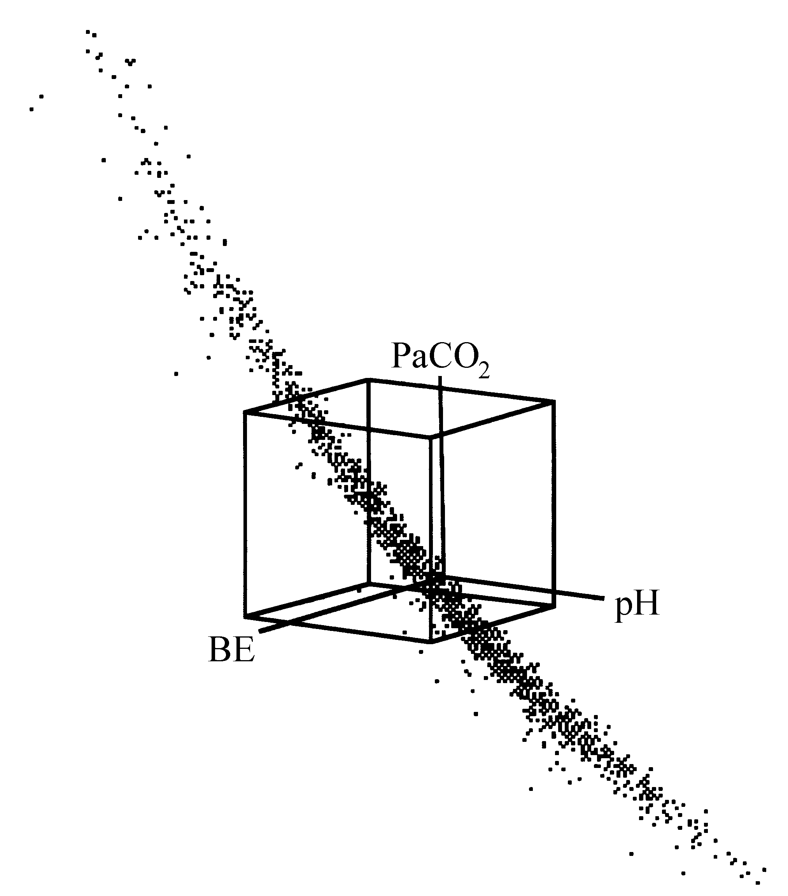
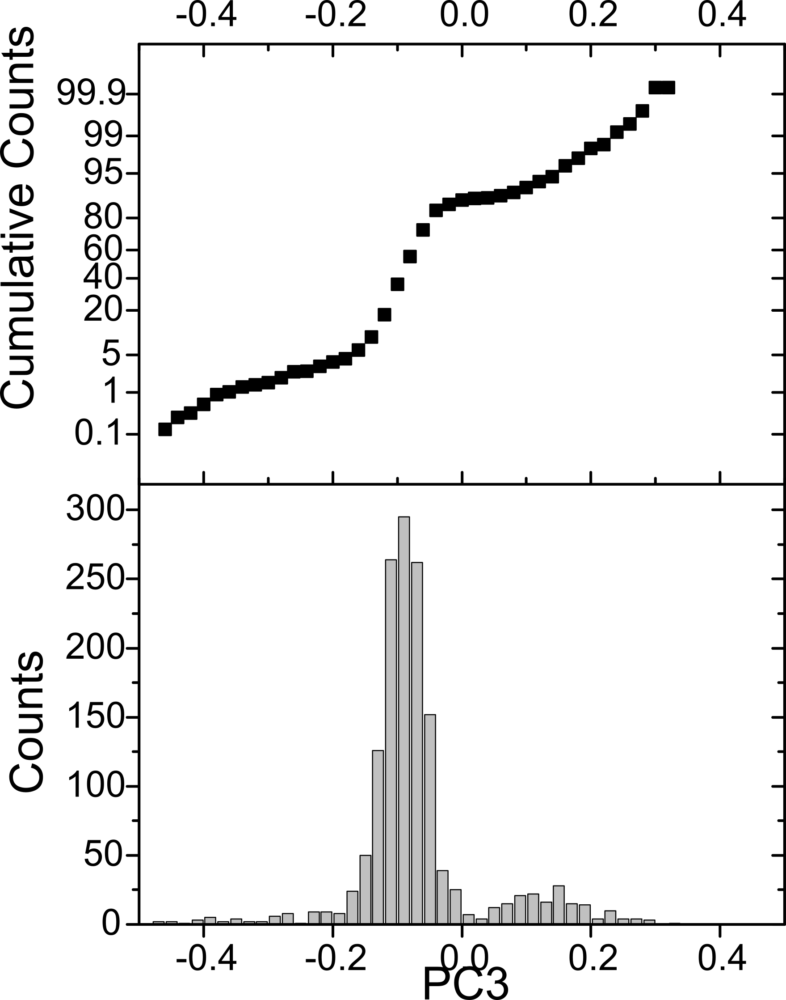
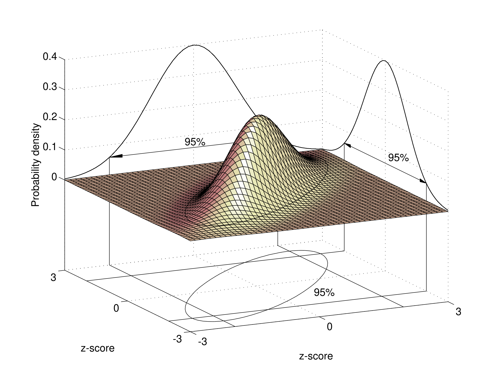
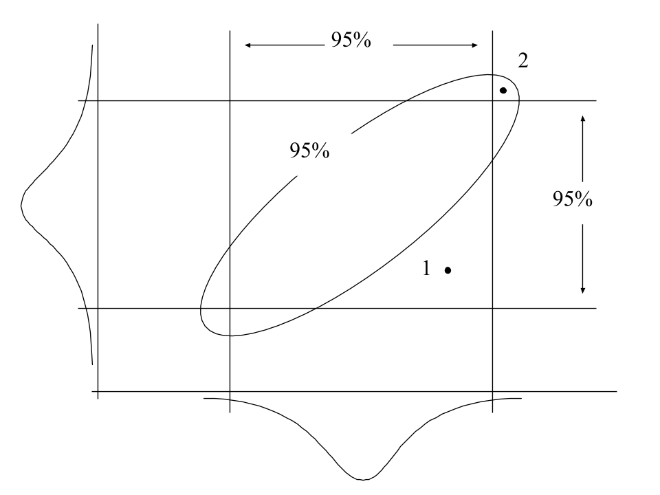
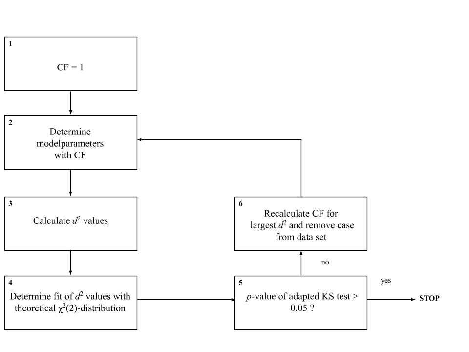
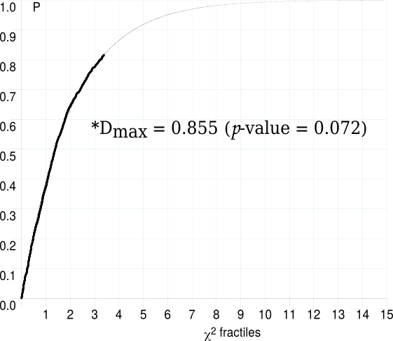

General introduction
The role of clinical chemistry in medicine
Medicine is an art and a science in the service of fellow human beings [1]. On the basis of collected empirical data and information, clinicians select specific diagnoses, rule out other differential diagnoses and eventually make decisions about which and how specific therapeutic interventions are made for the benefit and health of their patients. For a proper interpretation, collected data and information must be compared with other, already existing, data and information to assess the exact value of the clinician’s findings. Moreover, a clinician compares observed medical data of a patient with knowledge obtained during his or her training as a clinician and with the experience obtained by working with other patients.
A prerequisite in this paradigm, however, is that collected empirical data on which the diagnoses of a clinician are based must be as objective as possible. Clinical chemistry takes a pivotal role in this in the sense that the chemical characterisation of a patient’s body fluid is one of the ways in medicine that can provide such objective data. Since the beginning of this century, clinical chemistry has evolved into a separate and independent discipline in the field of medicine [2-4]. Nowadays, most often a single central clinical chemistry laboratory takes care of the ‘analytical needs’ of one or more hospitals.
Tasks of the clinical chemist typically include the improvement of existing methods of chemical analysis, the development of new analytical methods and providing the clinician with as much information as possible on the basis of chemical analyses. Especially this last task forms the basis of what has become known as chemometrics, a branch of clinical chemistry that uses mathematical and statistical methods to extract a maximum of information from chemical analyses [5, 6].
This thesis presents a multivariate chemometric approach to the problems that are currently associated with the interpretation and evaluation of those laboratory measurements that are used to assess the arterial acid-base status of a patient in an intensive care unit (ICU).
Arterial acid-base measurements in the ICU
The ICU of today is a highly specialised ward in which expert medical, nursing and technical staff provides medical services to severely ill patients. It is characterised as a high-tech environment in which the real-time monitoring of vital functions plays a central role. The origin of the ICU can be traced back to the second half of the 19th century when special rooms, adjacent to the operating room, were used primarily for the purpose of postoperative care [7]. In the course of time, these recovery rooms evolved into specialised respiratory care units and shock and trauma units, eventually leading to the present day ICU. The modern ICU provides integrated cardiopulmonary support for both medical and surgical patients suffering from severe respiratory and / or cardiac problems as a result of disease or trauma.
The most frequently ordered chemical test in the ICU is the arterial blood gas measurement [8]. Arterial blood gas measurements comprise those measurements of the patient’s arterial blood that are used for the evaluation and interpretation of the patient’s oxygen and acid-base status. Basic arterial blood gas measurements include: the partial pressure of oxygen (\(\ce{PaO2}\)), the oxygen saturation of haemoglobin, the \(\ce{pH}\) of arterial blood, the partial pressure of carbon dioxide (\(\ce{PaCO2}\)) and the bicarbonate-ion concentration (a\([\ce{HCO}_{3}^-]\)). The first two measurements (\(\ce{PaO2}\) and oxygen saturation) are used to evaluate the oxygen status, while the other three are used for the interpretation of the arterial acid-base status.
In a strict sense, the term blood gas measurements is incorrect, since only \(\ce{PaO2}\) and \(\ce{PaCO2}\) are true gas measurements and in modern chemical analysers a\([\ce{HCO}_{3}^-]\) is not measured but calculated from measured \(\ce{pH}\) and \(\ce{PaCO2}\). Moreover, two other derived acid-base parameters are generally considered part of the set of arterial blood gas measurements. These parameters are the standard bicarbonate-ion concentration (SB) and the base excess (\(\ce{BE}\)). Their derivation and rationale are described in section 1.4.3 in more detail.
Since the second half of this century, the analysis of arterial blood for the purpose of acid-base characterisation has become a vital part of intensive care medicine. The importance of the acid-base characterisation of arterial blood is illustrated by the severe polio epidemic that struck Copenhagen (Denmark) in 1952 [9]. During this epidemic, hospitals in Copenhagen had to cope with a large number of patients needing intensive artificial respiration as a result of paralysis of the respiratory muscles. For a proper setting of the artificial respiration, the complete acid-base status of the patient had to be known. At that time, arterial blood of patients was seldom sampled for the purpose of performing blood gas measurements [10]. Arterial blood gas measurements were mainly performed in physiological laboratories and were not part of daily clinical practice. Techniques of measurement were cumbersome and needed large equipment.
The clinical necessity of quickly knowing the patient’s arterial acid-base status for the purpose of a proper adjustment of the artificial respiration inspired Poul Astrup to develop his equilibration method [9]. This method allowed a relatively quick determination of the three basic acid-base parameters by only measuring the \(\ce{pH}\) of an arterial blood sample and the \(\ce{pH}\) of the sample equilibrated at two known \(\ce{PaCO2}\) gas tensions. The original \(\ce{PaCO2}\) is calculated by interpolation [11, 12]. Since then, techniques of analysis developed and arterial acid-base measurements have become routine and indispensable in the daily clinical care of intensive care patients.
Basic acid-base physiology
In chemical terms, acids are substances that are capable of donating hydrogen (\(\ce{H+}\)) ions while bases are substances capable of accepting \(\ce{H+}\) ions. The amount of \(\ce{H+}\) ions in the arterial blood determines its actual acidity. Acidity is measured as \(\ce{pH}\), which is, according to the definition of Sörensen, the negative logarithm of the \(\ce{H+}\) concentration (\(\ce{[H+]}\)) [9].
The regulation of the amount of \(\ce{H+}\) ions in the arterial blood and consequently its \(\ce{pH}\) is one of the most powerful controlling mechanisms in the human body. Under normal physiologic conditions, the \(\ce{pH}\) of arterial blood is kept within well-defined limits. This tight regulation of the \(\ce{H+}\) concentration in arterial blood is essential since \(\ce{H+}\) ions are highly reactive with negatively charged parts of molecules. Changes in \(\ce{H+}\) concentration (intra-cellular as well as extra-cellular) therefore have a profound influence on the molecular configuration and consequently on protein function [13]. Hence, maintaining a constant \(\ce{pH}\) ensures an optimal working condition for enzymes and other proteins. Moreover, large deviations in \(\ce{pH}\) may have effects on the nervous system. If the body becomes too acidic, the nervous system can become so depressed that death can occur. On the other hand, if the body becomes too alkaline, the nervous system can become overexcited, resulting in death from tetanus of the respiratory muscle [14].
Two mechanisms exist to regulate \(\ce{pH}\) of arterial blood: long term physiological buffering and short term chemical buffering. Physiological buffering is the redistribution, production, excretion and/or retention of (non-)volatile acids and bases by means of physiological processes. Chemical buffering is the result of the presence of weak acids and their conjugated bases in the arterial blood. Examples of chemical buffers in arterial blood are: inorganic phosphate, organic phosphate and haemoglobin.
One of the most important chemical buffer systems in the blood, however, is the bicarbonate ion (\(\ce{HCO}_{3}^-\))/carbon dioxide (\(\ce{CO2}\)) buffer system. It is mainly the presence of this buffer system that makes it possible for the human body to cope with the constant load of exogenous acids and bases and the vast amount of both volatile and non-volatile acids that are continuously generated as a result of normal metabolism.
The equation describing the \(\ce{HCO}_{3}^-\)/\(\ce{CO2}\) buffer system in blood is:
\[\ce{CO2 + H2O <=> H2CO3 <=> H+ + HCO}_{3}^-\] (1–1)
The left-hand side of this chemical reaction represents the formation of carbonic acid (\(\ce{H2CO3}\)) from \(\ce{CO2}\) and \(\ce{H2O}\). Therefore, although \(\ce{CO2}\) itself is not an acid, an elevation of the \(\ce{CO2}\) in the blood increases the acidity of the blood through the formation of \(\ce{H2CO3}\) which immediately dissociates into protons (\(\ce{H+}\)) and bicarbonate ions (\(\ce{HCO}_{3}^-\)).
Since the concentration of \(\ce{H2CO3}\) is so low in relation to the concentration of dissolved \(\ce{CO2}\) and the concentration of \(\ce{HCO}_{3}^-\), the law of mass action for the \(\ce{HCO}_{3}^-\)/\(\ce{CO2}\) buffer system is:
\[\ce{K = \frac{[H+]\times[$\ce{HCO}_{3}^-$]}{[CO2]\times[H2O]}}\] (1–2)
where \(\ce{K}\) is a constant.
Because \(\ce{H2O}\) is relatively constant in body fluids, it can be omitted from the equation and incorporated into the constant \(\ce{K}\), further indicated as \(\ce{K}'\) [13]. Rewriting the resulting equation to solve [\(\ce{H+}\)] yields the equation that Lawrence Joseph Henderson (1878-1942) first described in 1909 [10]:
\[\ce{[H+] = $\ce{K}'$ \times \frac{[CO2]}{[$\ce{HCO}_{3}^-$]}}\] (1–3)
The concentration of dissolved \(\ce{CO2}\) in blood ([\(\ce{CO2}\)]) is proportional to the partial pressure of \(\ce{CO2}\) (\(\ce{PCO2}\)) in the gas with which the blood is in equilibrium. Therefore, \(\ce{[CO2]}\) can be replaced by the partial pressure of \(\ce{CO2}\) in the blood. Partial pressures are either measured in millimetres mercury (mmHg) or kilo-Pascal (kPa) where 1 mmHg = 0.133 kPa. The constant relating \(\ce{[CO2]}\) in mmol/l to the \(\ce{PCO2}\) is called the solubility constant. The solubility constant for \(\ce{[CO2]}\) in plasma is 0.03 mmol per litre per mmHg or 0.225 mmol per litre per kPa.
Moreover, applying the \(\ce{pH}\) concept of Sörensen, in 1917 Karl Albert Hasselbalch (1874-1962) introduced the Henderson-Hasselbalch equation:
\[\ce{pH = $\ce{pK}'$ + log\frac{[$\ce{HCO}_{3}^-$]}{\alpha PCO2}}\] (1–4)
where \(\ce{pK}'\) = 6.10 and \(\alpha\) is the solubility constant for \(\ce{[CO2]}\) in plasma.
From equation 1–4 it is apparent that \(\ce{pH}\) is the resultant of the ratio \([\ce{HCO}_{3}^-]\)/\(\ce{PCO2}\). Both \(\ce{PCO2}\) and \([\ce{HCO}_{3}^-]\) can effectively be regulated by lungs and kidneys, respectively [15]. This feature in particular makes the \(\ce{HCO}_{3}^-\)/\(\ce{CO2}\) buffer system so effective in maintaining a constant arterial blood \(\ce{pH}\). Knowing \(\ce{pH}\), \(\ce{PCO2}\) and \([\ce{HCO}_{3}^-]\) in the arterial blood of a patient is vital when interpreting the acid-base status of arterial blood. It gives information on both the respiratory and metabolic component of an acid-base disturbance and their joint effect on the acidity of the arterial blood.
Although Sörensen introduced the electrochemical measurement of \(\ce{H+}\) ions as early as in 1909, it was not until 1932 that \(\ce{pH}\) glass electrodes were produced commercially and used on a regular basis. Before that time, \(\ce{pH}\) of blood was indirectly obtained from measuring total \(\ce{CO2}\) and \(\ce{PCO2}\) in the blood with the manometric Van Slyke apparatus that Donald Dexter van Slyke (1883-1971) introduced in 1924 [9]. Around 1960 the \(\ce{CO2}\) electrode was introduced into clinical chemistry. Today, chemical analysers measure \(\ce{pH}\) and \(\ce{PCO2}\) and calculate \([\ce{HCO}_{3}^-]\) with the use of the Henderson-Hasselbalch equation (see Equation 1 –4).
The clinical interpretation of acid-base parameters
An impairment in either the respiratory or metabolic function (or both) of the body may result in so-called acid-base disturbances [13]. For a proper treatment of these disturbances it is essential for an ICU clinician to be aware of the exact acid-base status of the arterial blood of an ICU patient. With the analysis of measured and calculated arterial acid-base parameters, the ICU clinician aims to find the underlying cause(s) of one or more acid-base disturbances in order to remove it with specific therapeutic interventions. Moreover, for patients receiving artificial respiration, the acid-base analysis of arterial blood is essential for setting the kind and degree of artificial respiration.
General nomenclature and terminology
Acid-base disorders can be divided into primary, secondary and combined acid-base disturbances. Primary acid-base disturbances are the result of impairment of either the respiratory function or the metabolic function of the body. Impairments of the respiratory function result in primary respiratory acid-base disturbances, whereas impairments in metabolic function result in non-respiratory or metabolic disturbances. Both respiratory and metabolic disturbances can be further divided into disturbances that tend to lower the \(\ce{pH}\), resulting in acidemia, and disturbances that tend to raise the \(\ce{pH}\), resulting in alkalemia. These acid-base disturbances are called acidoses and alkaloses, respectively. Hence, the terms acidosis and alkalosis refer to underlying \(\ce{pH}\)-deranging physiologic processes, whereas the terms acidemia and alkalemia merely indicate the actual acidity of arterial blood. Multiple single primary acid-base disturbances can be present at the same time, resulting in combined acid-base disturbances.
Moreover, as a response to primary acid-base disorders, the human body is capable of initiating compensating mechanisms. Primary respiratory disturbances trigger mechanisms in the kidneys that actively regulate the reabsorbtion of excreted \(\ce{HCO}_{3}^-\) ions, thereby inducing metabolic compensating effects. Also, primary metabolic dysfunction eventually triggers the breathing centre, resulting in an adjustment of the respiration and consequently the \(\ce{PaCO2}\). These compensating processes result in secondary acid-base disturbances. The capability of the body to compensate for primary acid-base disturbances prevents large changes in the \(\ce{pH}\) of arterial blood even though pathological processes may be present.
Respiratory compensations are very rapid and effective within minutes, while metabolic compensations can take up to three days to be fully effective. A metabolic compensation can, however, when in full working order, completely compensate a primary respiratory disturbance, while a respiratory compensation can only partially compensate primary metabolic acid-base disturbances.
It is apparent that for a proper treatment of an acid-base disturbance, the complete acid-base status of a patient should be known to a clinician. Although the body can compensate primary acid-base disturbances to a certain extent, therapeutic measurements must be taken as soon as possible to eliminate any primary acid-base disturbance. Moreover, severely ill patients on the ICU most often receive some form of artificial respiration. Being on mechanical ventilation means that the body cannot fully employ respiratory compensating mechanisms, making the ICU clinician even more responsible for keeping the \(\ce{pH}\) of the arterial blood within acceptable boundaries.
For most ICU patients, an arterial blood gas analysis is performed on a routine basis, for instance every 3 or 6 hours. However, the interpretation of acid-base data is still regarded as difficult since several pieces of information must be evaluated at the same time in their clinical context. Multiple primary disturbances can be present at the same time, concealed by various degrees of compensation, making the diagnosis and monitoring of acid-base data a complex task.
This complexity is illustrated by the coexistence of two distinct methods for interpreting arterial acid-base parameters. One method uses in vivo information to interpret \(\ce{pH}\), \(\ce{PaCO2}\) and \([\ce{HCO}_{3}^-]\), while the other method makes use of \(\ce{pH}\), \(\ce{PaCO2}\) and a calculated in vitro parameter called base excess (\(\ce{BE}\)). This latter method was developed around 1960 by Poul Astrup and Ole Siggaard-Andersen from Denmark and is therefore also known as the Scandinavian view [16].
Schwartz and Relman of the Tufts University School of Medicine in Boston (USA) criticised the in vitro approach and made a case for \(\ce{pH}\), \(\ce{PaCO2}\) and \([\ce{HCO}_{3}^-]\) [17]. This method is therefore also known as the North American view. The controversy between the two schools, which Bunker called ‘The Great Trans-Atlantic Acid-Base Debate’, still exists today, although many attempts were made to bridge the gap [16, 18-22].
The North American view; \([\ce{HCO}_{3}^-]\) and in vivo \(\ce{CO2}\) buffer lines
In the North American view, a high value of \(\ce{PaCO2}\) indicates a primary respiratory acidosis or a respiratory compensation for a metabolic alkalosis, while a low value of \(\ce{PaCO2}\) indicates a primary respiratory alkalosis or a respiratory compensation for a primary metabolic acidosis. The metabolic component of an acid-base status is assessed with \([\ce{HCO}_{3}^-]\). A high value of \([\ce{HCO}_{3}^-]\) indicates a primary metabolic alkalosis or a metabolic compensation for a primary respiratory acidosis while a low \([\ce{HCO}_{3}^-]\) indicates a primary metabolic acidosis or a metabolic compensation for a primary respiratory acidosis. However, \([\ce{HCO}_{3}^-]\) cannot be used as a true metabolic parameter, since changes in \(\ce{PaCO2}\) also effect \([\ce{HCO}_{3}^-]\).
The concept of the North American view is that in vivo data is used to calculate the expected rise or fall in \([\ce{HCO}_{3}^-]\) and/or \(\ce{PaCO2}\) that occur in specific acid-base disorders. The empirically derived in vivo information has been compiled from a large number of clinical studies in which the normal compensatory reactions to each of the primary acid-base disorders has been investigated and quantified [23-30]. An observed value of \([\ce{HCO}_{3}^-]\) or \(\ce{PaCO2}\) below or above the expected value of \([\ce{HCO}_{3}^-]\) or \(\ce{PaCO2}\) is an indication for the presence and nature of a metabolic component or respiratory component of an acid-base disorder. Table 1 –1 presents the empirically found expected compensatory rise and fall in \([\ce{HCO}_{3}^-]\) and \(\ce{PaCO2}\) for the primary acid-base disturbances.
Table 1–1. Compensations to primary acid-base disturbances in the North American view [13].
| metabolic acidosis |
↓ \([\ce{HCO}_{3}^-]\) |
1.2 mmHg decrease in \(\ce{PaCO2}\) for every 1 mmol/l fall in \([\ce{HCO}_{3}^-]\) |
| metabolic alkalosis |
↑ \([\ce{HCO}_{3}^-]\) |
0.7 mmHg elevation in \(\ce{PaCO2}\) for every 1 mmol/l rise in \([\ce{HCO}_{3}^-]\) |
| respiratory acidosis |
↑ \(\ce{PaCO2}\) |
|
| acute |
|
1 mmol/l elevation in \([\ce{HCO}_{3}^-]\) for every 10 mmHg rise in \(\ce{PaCO2}\) |
| chronic |
|
3.5 mmol/l elevation in \([\ce{HCO}_{3}^-]\) for every 10 mmHg rise in \(\ce{PaCO2}\) |
| respiratory alkalosis |
↓ \(\ce{PaCO2}\) |
|
| acute |
|
2 mmol/l decrease in \([\ce{HCO}_{3}^-]\) for every 10 mmHg fall in \(\ce{PaCO2}\) |
| chronic |
|
5 mmol/l decrease in \([\ce{HCO}_{3}^-]\) for every 10 mmHg fall in \(\ce{PaCO2}\) |
The Scandinavian view; standard bicarbonate and base excess
The North American view requires calculations to be performed at the bedside of a patient. Moreover, to predict the amount of rise or fall in primary acid-base values, the acid-base disturbance of a patient should be known a priori. To overcome the ‘problems’ of bedside calculations and the paradox of classifying an already known acid-base disturbance, Astrup and Siggaard-Andersen developed the concept of the standard bicarbonate and the base excess as true metabolic acid-base parameters [11].
In 1960, Astrup described his equilibration method for the rapid measurement and calculation of the primary acid-base parameters \(\ce{pH}\), \(\ce{PaCO2}\) and \([\ce{HCO}_{3}^-]\) [12 , 31]. In a microtonometer a blood sample is equilibrated with two known \(\ce{CO2}\) gas mixtures, one with a high \(\ce{PaCO2}\) and one with a low \(\ce{PaCO2}\). Plotting \(\ce{PaCO2}\) and measured \(\ce{pH}\) at both \(\ce{PaCO2}\) values in a log \(\ce{PaCO2}\)–\(\ce{pH}\) diagram, and connecting the two points with a line yields the in vitro \(\ce{CO2}\) equilibration curve. By measuring \(\ce{pH}\) of the original blood sample and putting it in the plot, the actual \(\ce{PaCO2}\) of the blood sample can be read from the \(\ce{CO2}\) equilibration curve. With the Henderson-Hasselbalch equation \([\ce{HCO}_{3}^-]\) can be calculated.
With the log \(\ce{PaCO2}\)–\(\ce{pH}\) chart and the in vitro \(\ce{CO2}\) equilibration curve of a patient, \([\ce{HCO}_{3}^-]\) can be calculated at any desired \(\ce{PaCO2}\) value. Astrup proposed to use the \([\ce{HCO}_{3}^-]\) of a blood sample at a \(\ce{PaCO2}\) of 40 mmHg as a true metabolic parameter, since this would be the concentration that would have been found in the blood sample if the influence of the respiration was eliminated. He called it the standard bicarbonate concentration or SB.
At the same time, Siggaard-Andersen completed his titration experiments in which he determined the \(\ce{CO2}\) equilibration curves of normal blood and blood with known amounts of non-volatile acids and bases at a fixed \(\ce{PaCO2}\) of 40 mmHg. Based on these experiments he added to the log \(\ce{PaCO2}\)–\(\ce{pH}\) diagram of Astrup a curved line representing the amount of non-volatile acid or base needed to titrate the blood sample at a \(\ce{PaCO2}\) of 40 mmHg to a \(\ce{pH}\) of 7.40 at a temperature of 37 °C. Astrup and Siggaard-Andersen called this the base excess or \(\ce{BE}\). Positive base excess values indicate a relative deficit of non-volatile acids while negative base excess values indicate a relative surplus of non-volatile acids. A base excess of 0 means that there is no metabolic component in the acid-base disorder. In modern analysers, \(\ce{BE}\) is calculated from \(\ce{pH}\), \(\ce{PaCO2}\), \([\ce{HCO}_{3}^-]\) and the haemoglobin concentration of the arterial blood sample at hand.
The most important argument against the use of standard bicarbonate and base excess is that they are determined in vitro. The in vitro \(\ce{CO2}\) equilibration curve is the equilibration curve of whole blood in a tube or syringe. It has been shown that in vivo buffering of protons is different from the in vitro buffering of protons [17]. This is mainly because in vivo buffering takes place in the extracellular fluid in which the haemoglobin concentration (a powerful chemical buffer) is lower than in whole blood. Both Siggaard-Andersen himself and Severinghaus proposed to calculate \(\ce{BE}\) not with the measured haemoglobin concentration of the sample, but with a haemoglobin concentration of 5 g/dl, which is the Hb concentration relative to the total volume of extracellular fluid of the body [32, 33]. This \(\ce{BE}\) is also known as BEecf (Base Excess of extracellular fluid), SBE (Standard Base Excess) and BE5 (Base Excess at a haemoglobin concentration of 5 g/dl.
With \(\ce{BE}\) as a true metabolic parameter, classifying acid-base disturbances is now straightforward. Figure 1 –1 and Table 1 –2 show all possible acid-base classifications based on \(\ce{pH}\), \(\ce{PaCO2}\) and \(\ce{BE}\).
Table 1–2. Classification of acid-base disorders in the Scandinavian view. The signs ‘-’, ‘+’ and ‘=’ indicate an observed value being respectively below, above or within its 95% normal reference interval. See also Figure 1–1.
| 1 |
- |
+ |
= |
respiratory acidosis |
| 2 |
- |
+ |
+ |
partly compensated respiratory acidosis |
| 3 |
= |
+ |
+ |
compensated respiratory acidosis OR compensated metabolic alkalosis OR combined respiratory acidosis and metabolic alkalosis |
| 4 |
+ |
+ |
+ |
partly compensated metabolic alkalosis |
| 5 |
+ |
= |
+ |
metabolic alkalosis |
| 6 |
+ |
- |
+ |
combined respiratory and metabolic alkalosis |
| 7 |
+ |
- |
= |
respiratory alkalosis |
| 8 |
+ |
- |
- |
partly compensated respiratory alkalosis |
| 9 |
= |
- |
- |
compensated respiratory alkalosis OR compensated metabolic acidosis OR combined respiratory alkalosis and metabolic acidosis |
| 10 |
- |
- |
- |
partly compensated metabolic acidosis |
| 11 |
- |
= |
- |
metabolic acidosis |
| 12 |
- |
+ |
- |
combined respiratory and metabolic acidosis |
|
= |
= |
= |
normal |
| x |
unclassifiable |
|
|
|
To determine whether an observed value for an acid-base parameter is too low, normal or too high, standard univariate 95% reference intervals are used. Table 1 –3 presents the associated upper and lower cut-off values for the univariate 95% reference intervals of arterial \(\ce{pH}\), \(\ce{PaCO2}\), \(\ce{BE}\) and \([\ce{HCO}_{3}^-]\).

Figure 1–1. Areas of acid-base classification according to the method presented in Table 1–2. Combinations of low, high or normal observed values yield 12 specific acid-base disorder regions. In the normal region, all values are within their standard 95% normal reference intervals. The ‘x’ regions are formally not classifiable [34]. In these regions, one of the three observed acid-base values is outside its 95% univariate reference interval.
Table 1–3. Upper and lower limits of the standard 95% normal reference intervals for the acid-base variables in arterial blood.
| \(\ce{pH}\) |
7.35 |
7.45 |
| \(\ce{PaCO2}\) |
35 mmHg |
45 mmHg |
| \(\ce{BE}\) |
-3 mmol/l |
3 mmol/l |
| \([\ce{HCO}_{3}^-]\) |
21 mmol/l |
27 mmol/l |
Objective and scope of this thesis
Two main problems are currently associated with the interpretation and evaluation of arterial acid-base measurements in an intensive care setting.
The first problem occurs when classifying the acid-base variables \(\ce{pH}\), \(\ce{PaCO2}\) and \(\ce{BE}\) according to the method described in section 1.4.3. A strict adherence to the classification rules as described in Table 1 –3 reveals that some combinations of observed values for the three acid-base variables can formally not be classified. This was found when an attempt was made to computerise the classification scheme of Astrup and Siggaard-Andersen in a rule-based expert system [34]. Typically, the unclassifiable situation occurs when only one of the three observed acid-base values is outside its 95% univariate reference interval, while the other two are within their 95% univariate intervals. In Figure 1 –1, this situation is represented by the triangular regions denoted by ‘x’.
The second problem originates from the use of the 95% univariate reference interval as the standard statistical model for evaluating the ‘normalcy’ of observed arterial acid-base values from intensive care patients.
A first critical note on the use of 95% reference intervals is that the determination of the respective reference intervals and the characteristics of the reference population are completely unknown. In general, reference intervals are derived from a representative sample of a (often) ‘healthy’ reference population [35]. The process of defining the reference criteria, the selection of reference individuals, analytical considerations and the use of statistical techniques for defining valid 95% univariate reference intervals are described in detail [36-40]. Nothing is known, however, about the determination of the 95% univariate reference intervals that are presented in Table 1 –2. If we assume that the intervals are defined on a ‘healthy’ reference population, what is the value of these intervals in an intensive care setting where it is to be expected that most of the observed acid-base values will be outside these ‘health’-based intervals?
A second critical note concerns the number of reference intervals used. Traditionally, the interpretation of the acid-base status involves the use of three separate 95% reference intervals for evaluating the acid-base variables: \(\ce{pH}\), \(\ce{PaCO2}\) and \([\ce{HCO}_{3}^-]\) in the North American view, or \(\ce{pH}\), \(\ce{PaCO2}\) and \(\ce{BE}\) in the Scandinavian view. From the Henderson-Hasselbalch equation (Equation 1 –4), however, it is apparent that the relationship between \(\ce{pH}\), log \(\ce{PCO2}\) and log \([\ce{HCO}_{3}^-]\) is a linear one. This can best be appreciated when Equation 1 –4 is rewritten as:
\[\ce{pH - log [$\ce{HCO}_{3}^-$] + log PCO2= $\ce{pK}'$ - log $\ce{\alpha}$}\] (1–5)
with \(\ce{pK}'\) and log \(\alpha\) both being constant.
Moreover, in Chapter 2 it will be demonstrated that the relationship between \(\ce{pH}\), \(\ce{PaCO2}\) and \(\ce{BE}\) is also (almost) linear. Consequently, as Madias [41] already pointed out, it is illogical and fundamentally wrong that three separate 95% univariate reference intervals are used, while only two of the three variables can change independently.
A third critical note on the use of univariate 95% reference intervals is that the 95% univariate interval is not the proper statistical model for evaluating arterial acid-base values. Theoretically, the use of more than one 95% univariate reference interval in case of a simultaneous evaluation of multiple variables – which is the case when interpreting arterial acid-base values – is prone to error and leads a priori to more false positive and false negative observations [42-44]. This will be illustrated in detail in Chapter 4.
This thesis describes a new multivariate statistical reference model for evaluating and classifying arterial acid-base variables in an intensive care environment that addresses all of the above mentioned problems. The essence of the model is that a single 95% multivariate statistical reference region is defined on a large reference population consisting of acid-base data coming from intensive care patients themselves. Furthermore, the multivariate reference model is not defined on the original acid-base measurements but rather on the values obtained after applying a mathematical data reduction transformation procedure. Finally, based on the outcome of this transformation, a new way of classifying \(\ce{pH}\), \(\ce{PaCO2}\) and \(\ce{BE}\) values will be proposed that will have no unclassifiable categories, unlike the method described in 1.4.3.
The outline of this thesis is as follows. In Chapter 2, the mathematical data reduction technique will be introduced, together with the results of various transformed large acid-base data sets coming from several ICUs. In Chapter 3, a two-dimensional graphical representation of the three acid-base variables will be presented, based on the mathematical transformation as described in Chapter 2. Also, the new classification model for \(\ce{pH}\), \(\ce{PaCO2}\) and \(\ce{BE}\) combinations will be described. Then, in Chapter 4, the technique for defining a 95% multivariate patient-based reference region for the acid-base variables will be described. Chapter 5 presents the computational methods involved in the data reduction transformation procedure and the construction of the multivariate reference model. It also presents the prototype computer programs that were built for defining multivariate acid-base reference regions and describes their use in daily clinical practice. Chapter 6 exemplifies the use and practicability of the proposed graphical representation of acid-base data using measurements from three intensive care patients. In Chapters 7 and 8, the results of the clinical evaluation of the multivariate acid-base reference regions and classification model can be found. The thesis is concluded with a general discussion.
References
1. Solberg HE. Establishment and use of reference values. In: Burtis CA, Ashwood ER, eds. Tietz textbook of clinical chemistry. 2nd Edition, W.B. Saunders Company, 1994; 454-484.2.
2. Guder WG, Büttner J. Clinical chemistry in laboratory medicine in Europe-past, present and future challenges. Eur J Clin Chem Clin Biochem 1997; 35:487-494.3.
3. Sunderman FW, Sr. The foundation of clinical chemistry in the United States. Clin Chem 1994; 40:835-842.4.
4. Büttner J. Clinical chemistry as scientific discipline: historical perspectives. Clin Chim Acta 1994; 232:1-9.5.
5. Wold S. Chemometrics, why, what and where to next? J Pharm Biomed Anal 1991; 9:589-596.6.
6. Karjalainen EJ. The role of chemometrics in medical decision making. Scand J Clin Lab Invest Suppl 1990; 202:109-111.7.
7. Weil MH, Von Planta M, Rackow EC. Critical care medicine: introduction and historical perspective. In: Shoemaker W, ed. Textbook of Critical Care. 2nd Edition, Philadelphia: W.B. Saunders Company, 1989; 1-5.8.
8. Muakkassa FF, Rutledge R, Fakhry SM, et al. ABG's and arterial lines: the relationship to unnecessarily drawn arterial gas samples. J Trauma 1990; 30:1087-1095.9.
9. Severinghaus JW, Astrup PB. History of blood gas analysis. Boston: Little, Brown and Company, 1987, Lange BP, ed., International Anesthesiology Clinics; vol 25.10.
10. Astrup P, Severinghaus JW. The history of blood gases, acids and bases. The history of blood gases, acids and bases. 1st Edition, Copenhagen: Munksgaard International Publishers, 1986; 264-295.11.
11. Astrup P, Jörgensen K, Siggaard-Andersen O, et al. The acid-base metabolism, a new approach. Lancet 1960;1035-1039.12. 12. Astrup P. A new approach to acid-base metabolism. Clin Chem 1961; 7:1-15.13.
13. Rose BD. Clinical Physiology of Acid-Base and Electrolyte Disorders. 4th Edition, New York: McGraw-Hill, Inc., 1994; 853.14.
14. Hainsworth R. Acid-base balance. Physiological Society Study Guides. Manchester: Manchester University Press, 1986; 155; vol 1.15.
15. Lane EE, Walker JF. Clinical arterial blood gas analysis. St. Louis: The C.V. Mosby Company, 1987; 247.16.
16. Bunker JP. The great trans-atlantic acid-base debate. J Anesthesiol 1965; 26:591-594.17.
17. Schwartz WB, Relman AS. A critique of the parameters used in the evaluation of acid-base disorders. "Whole-blood buffer base" and "standard bicarbonate" compared with blood \(\ce{pH}\) and plasma bicarbonate concentration. New Engl J Med 1963; 268:1382-1388.18.
18. Rispens P, Zijlstra WG, Van Kampen EJ. Significance of bicarbonate for the evaluation of non-respiratory disturbances of acid-base balance. Clin Chim Acta 1974; 54:335-347.19.
19. Siggaard-Andersen O, Fogh-Andersen N. Base excess or buffer base (strong ion difference) as measure of a non-respiratory acid-base disturbance. Acta Anaesthesiol Scand Suppl 1995; 107:123-128.20.
20. Severinghaus JW. Acid-base balance nomogram. A Boston-Copenhagen détente. Anesthesiology 1976; 45:3-5.21.
21. Severinghaus JW. Acid-base balance controversy. Editorial introduction. J Clin Monit 1991; 7:274-275.22.
22. Severinghaus JW. Siggaard-Andersen and the "Great Trans-Atlantic Acid-Base Debate". Scand J Clin Lab Invest 1993; 53:99-104.23.
23. Arbus GS, Herbert LA, Levesque PR, et al. Characterization and clinical application of the "significance band" for acute respiratory alkalosis. New Engl J Med 1969; 280:117-123.24.
24. Bushinsky DA, Coe FL, Katzenberg C, et al. Arterial PCO2 in chronic metabolic acidosis. Kidney Int 1982; 22:311-314.25.
25. Javaheri S, Shore NS, Rose B, et al. Compensatory hypoventilation in metabolic alkalosis. Chest 1982; 81:296-301.26.
26. Javaheri S, Kazemi H. Metabolic alkalosis and hypoventilation in humans. Am Rev Respir Dis 1987; 136:1011-1016.27.
27. Pierce NF, Fedson DS, Brigham KL, et al. The ventilatory response to acute base deficit in humans. Time course during development and correction of metabolic acidosis. Ann Intern Med 1970; 72:633-640.28.
28. Polak A, Haynie GD, Hays GM, et al. Effects of chronic hypercapnia on electrolyte and acid-base equilibrium. I. Adaptation. J Clin Invest 1961; 40:1223.29.
29. Van Yperselle de S, Brasseur L, De Coninck JD. The "carbon dioxide response curve" for chronic hypercapnia in man. New Engl J Med 1966; 275:117-122.30.
30. Gennari FJ, Goldstein MB, Schwartz WB. The nature of the renal adaptation to chronic hypocapnia. J Clin Invest 1972; 51:1722-1730.31.
31. Siggaard-Andersen O, Engel K, Jörgensen K, et al. A micro method for determination of \(\ce{pH}\), carbon dioxide tension, base excess and standard bicarbonate in capillary blood. Scand J Clin Lab Invest 1960; 12:172-176.32.
32.Siggaard-Andersen O. An acid-base chart for arterial blood with normal and pathophysiological reference areas. Scand J Clin Lab Invest 1971; 27:239-245.33.
33. Severinghaus JW. Acid-base balance controverse: case for standard-base excess as the measure of nonrespiratory acid-base imbalance. J Clin Monit 1991; 7:276-277.34. Wulkan RW.
34. Expert systems and multivariate analysis in clinical chemistry. Rotterdam: Erasmus University Rotterdam, 1992; 111 pp.35.
35. Solberg HE, Gräsback R. Reference values. Adv Clin Chem 1994; 27:1 -79.36.
36. Dybkær R, Solberg HE. International Federation of Clinical Chemistry (IFCC), Scientific Committee, Clinical Section, Expert Panel on Theory of Reference Values, and International Committee for Standardization in Haematology (ICSH), Standing Committee on Reference Values. Approved Recommendation (1987) on the theory of reference values. Part 6. Presentation of observed values related to reference values. J Clin Chem Clin Biochem 1987; 25:657-662.37.
37. PetitClerc C, Solberg HE. International Federation of Clinical Chemistry (IFCC). Approved Recommendation (1987) on the theory of reference values. Part 2. Selection of individuals for the production of reference values. J Clin Chem Clin Biochem 1987; 25:639-644.38.
38.Solberg HE, PetitClerc C. International Federation of Clinical Chemistry (IFCC), Scientific Committee, Clinical Section, Expert Panel on Theory of Reference Values. Approved recommendation (1988) on the theory of reference values. Part 3. Preparation of individuals and collection of specimens for the production of reference values. J Clin Chem Clin Biochem 1988; 26:593-598.39.
39. Solberg HE. International Federation of Clinical Chemistry (IFCC), Scientific Committee, Clinical Section, Expert Panel on Theory of Reference Values. Approved recommendation (1988) on the theory of reference values. Part 5. Statistical treatment of collected reference values. Determination of reference limits. J Clin Chem Clin Biochem 1987; 25:645-656.40.
40. Solberg HE. International Federation of Clinical Chemistry (IFCC), Scientific Committee, Clinical Section, Expert Panel on Theory of Reference Values, and International Committee for Standardization in Haematology (ICSH), Standing Committee on Reference Values. Approved Recommendation (1986) on the theory of reference values. Part 1. The concept of reference values. J Clin Chem Clin Biochem 1987; 25:337-342.41.
41. Madias NE, Adroqué HJ, Horowitz GL, et al. A redefinition of normal acid-base equilibrium in man: Carbon dioxide tension as a key determinant of normal plasma bicarbonate concentration. Kidney Int 1979; 16:612-618.42.
42. Stamhuis IH, Bezemer PD, Kuik D. Evaluation of univariate ranges with a multivariate standard. J Clin Epidemiol 1988; 41:359-366.43.
43. Solberg HE. Multivariate reference regions. Scand J Clin Lab Invest Suppl 1995; 222:3-5.44.
44. Schoen I, Brooks SH. Judgment based on 95% confidence limits. Statistical Considerations 1969; 53:190-193.
The application of principal component analysis (PCA) to reduce the dimensionality of trivariate arterial acid-base data distributions
Marcel Hekking, Jan Lindemans, Edzard S. Gelsema
Parts are published in: International Journal of Bio-Medical Computing 1994; 209 - 221
Introduction
In clinical practice, the interpretation of the arterial acid-base status is performed by a simultaneous evaluation of three acid-base laboratory parameters; \(\ce{pH}\) of arterial blood, the partial pressure of carbon dioxide \(\ce{CO2}\) in arterial blood (\(\ce{PaCO2}\)) for the evaluation of the respiratory component, and either the arterial bicarbonate-ion (\(\ce{HCO}_{3}^-\)) concentration (a\([\ce{HCO}_{3}^-]\)) or the base excess (\(\ce{BE}\)) for the evaluation of the metabolic component [1, 2]. Arterial acid-base values, however, are linearly related [1]. This means that if two of the three parameters are known, the third can be calculated. Thus, clinicians use three acid-base parameters to assess the acid-base status of a patient as if they were independent of each other, although only two of the three variables can change independently.
Although a strict linear relationship is not self-evident for \(\ce{pH}\), \(\ce{PaCO2}\) and \(\ce{BE}\), an almost linear relationship is also present between these three variables. This was discovered during an earlier study [3] in which the distributions of large collections of \(\ce{pH}\), \(\ce{PaCO2}\) and \(\ce{BE}\) values were explored, using graphical software with capabilities of on-line three-dimensional rotation. During these explorations it was realised that, when plotting the combinations of the three variates as they occur in practice in three-dimensional space, the points are located on a surface with only a slight curvature.

Figure 2–1. Three-dimensional view of a rotated \(\mathit{pH}\), \(\mathit{PaCO_2}\) and base excess (\(\mathit{BE}\)) data set. The cube represents the 95% reference volume as defined by the 95% univariate reference intervals of Table 2–1.
Figure 2 –1 displays such a \(\ce{pH}\), \(\ce{PaCO2}\) and \(\ce{BE}\) distribution in three dimensions. The distribution is rotated in such a way that the curved plane of measurements can be easily viewed. The cube in the middle is the volume in three dimensions that represents the standard reference volume, as built from the three standard univariate 95% reference intervals for \(\ce{pH}\), \(\ce{PaCO2}\) and \(\ce{BE}\) of Table 2–1.
Table 2–1. Means (m) and standard deviations (s) as derived from the standard 95% reference intervals for the arterial acid-base variables. The standard deviations are calculated by assuming the 95% reference intervals to be 4 standard deviations wide.
| \(\ce{pH}\) |
7.35 – 7.45 |
7.40 |
0.025 |
| \(\ce{PaCO2}\) (mmHg) |
35 – 45 |
40 |
2.5 |
| \(\ce{PaCO2}\) (kPa) |
4.7 – 6.0 |
5.33 |
0.325 |
| \(\ce{BE}\) (mmol/l) |
-3 – 3 |
0 |
1.5 |
| \([\ce{HCO}_{3}^-]\) (mmol/l) |
21 – 27 |
24 |
1.5 |
| log \(\ce{PaCO2}\) (mmHg) |
log 35 – log 40 |
log 40 |
(log 35 – log 40) / 4 |
| log \(\ce{PaCO2}\) (kPa) |
log 4.7 – log 6.0 |
log 5.33 |
(log 4.7 – log 6.0) / 4 |
| log \([\ce{HCO}_{3}^-]\) |
log 21 – log 27 |
log 24 |
(log 21 – log 27) / 4 |
Having observed that the relationship between the arterial acid-base variables (both for combinations of \(\ce{pH}\), \(\ce{PaCO2}\) and \(\ce{BE}\) and \(\ce{pH}\), log \(\ce{PaCO2}\) and log a\([\ce{HCO}_{3}^-]\)) is an almost linear one, the goal is to arrive at a mathematical description of this relationship and to investigate its departure from linearity. The mathematical technique to be used for such an investigation is a principal component analysis (PCA). PCA is a multivariate statistical technique for the compression of large data matrices [4, 5]. In this chapter, the results of a PCA of several distributions of acid-base data, coming from various ICUs, are described.
Materials and methods
Patient data
Six acid-base data sets from four different intensive care units were submitted to PCA. Data set AZRbe contains 1500 unselected combinations of \(\ce{pH}\), \(\ce{PaCO2}\) and \(\ce{BE}\) values from patients of the respiratory ICU of the Dijkzigt academic hospital, Rotterdam, The Netherlands. The term unselected means that no specific selection criteria were applied. In fact, all data sets are constructed by sampling the acid-base data as consecutively measured in the respective clinical laboratories. Data set OLVGbe contains 1500 unselected combinations of \(\ce{pH}\), \(\ce{PaCO2}\) and \(\ce{BE}\) values from patients of the general ICU of the OLVG hospital, Amsterdam, The Netherlands. Data set OLVGab comprises the 1500 combinations of \(\ce{pH}\), log \(\ce{PaCO2}\) and log a\([\ce{HCO}_{3}^-]\) values from the same patients as the OLVGbe data set. Data set SKZbe contains 1500 combinations of \(\ce{pH}\), \(\ce{PaCO2}\) and \(\ce{BE}\) values from patients of the neonatal ICU of the Sophia Children’s hospital, Rotterdam, The Netherlands. The data set is composed of equal numbers of data in three age groups: new-borns younger than five days, infants between five days and one month of age, and infants aged between one month and one year. Data set ELIbe contains 1500 unselected combinations of \(\ce{pH}\), \(\ce{PaCO2}\) and \(\ce{BE}\) values from the general ICU of the St. Elisabeth hospital, Tilburg, The Netherlands. Data set ELIab comprises the 1500 combinations of \(\ce{pH}\), log \(\ce{PaCO2}\) and log a\([\ce{HCO}_{3}^-]\) from the same patients as the ELIbe data set.
Standardisation
Prior to the principal component analysis of an acid-base data set, each variable in the data set was standardised with fixed means and standard deviations according to:
\[z_i = \frac{x_i - m}{s},i = 1,...,N\] (2–1)
where \(m\) and \(s\) are, respectively, the mean and standard deviation for the respective acid-base variables as presented in Table 2 –1, while \(N\) is the total number of cases in the data set. The \(z_i\) values are therefore the deviations from the mean \(m\) , measured in units of the corresponding standard deviation \(s\).
Principal component analysis
The standardised data sets were then subjected to PCA. PCA is a mathematical transformation that enables the reduction of the number of variables in a multivariate data set whilst preserving as much of the original information as possible [4, 5]. Assuming a multivariate data set with \(p\) variables (\(x_1\), \(x_2\),..., \(x_p\)), PCA finds a new set of derived variables (\(z_1\), \(z_2\),...,\(z_p\)) that are linear functions of \(x_1\), \(x_2\),..., \(x_p\) with the following properties:
\(z_1\) has maximum possible variance among all possible linear functions of \(x_1\), \(x_2\),..., \(x_p\).
\(z_k\) has maximum possible variance among all possible linear functions of \(x_1\), \(x_2\),...,\(x_p\), subject to \(z_k\) being uncorrelated with \(z_1\), \(z_2\),...\(z_{k-1}\), for \(2 \le k \le p\) [4].
The derived variables \(z_1\), \(z_2\),...,\(z_p\) are called the principal components or PCs.
In linear algebraic terms, PCs are determined with an eigenvalue transformation of the variance-covariance matrix as derived from the multivariate data set. For a set of \(N\) vectors \(\bf x_i\) \((i= 1,...,N)\) in a \(p\)-dimensional data set, the variance-covariance matrix \(V\) is defined as:
\[V = \frac{\sum\limits_{i = 1}^{N}{(\bf x_i - \bf m)(\bf x_i - \bf m)^{T}}}{N(N - 1)}\] (2–2)
where \(\bf m\) is the vector of the mean of the set \(\bf{x_i}\) \((i= 1,...,N)\) and the superscript \(T\) indicates transposition of a vector, in the convention that an untransposed vector is a column vector. The eigenvalue transformation yields a transformation matrix \(U\), which transforms the original vectors \(\bf m\) into vectors \(\bf y\), according to \(\bf y =\) \(U\) \(\bf x\), such that the variance-covariance matrix \(W = UVU^T\) of the transformed vectors \(\bf y\) is a diagonal matrix. If \(U\) is constrained to be a unitary matrix, the component variances of the transformed vectors \(\bf y\) appear as eigenvalues (\(\lambda\)) in the analysis and are found as the diagonal elements of \(W\).
Since the eigenvalue transformation diagonalises the variance-covariance matrix, the total variance in the set of original vectors \(\bf x\) is decomposed into \(p\) orthogonal directions. Thus, for a set of \(p\)-dimensional vectors \(\bf x\) for which it is observed that most of the variance is confined to a subspace of dimension \(l < p\), it is expected that the components 1 through \(l\) of the transformed vectors \(\bf y\) contain most of the useful information. The components \(l +1\) through \(p\) have only a small variance, and thus convey (almost) no information. In the present situation, \(p = 3\) and due to the (almost) linear relationships between the variables in the standardised data sets, it is expected that \(l = 2\).
Results
Table 2 –2 presents the results of the principal component analysis of each data set. The eigenvalues \(\lambda\) are shown for each of the three principal components (hereafter referred to as PC1, PC2 and PC3). The eigenvalues \(\lambda\) explain the contribution of each of the principal component to the total variance in the data set prior to PCA. For instance, in the AZRbe data set, PC1, PC2 and PC3 explain 62.37%, 36.91% and 0.71% of the total variance in the initial data set, respectively. From Table 2 –2 it can be concluded that for each data set, the percentage of variance explained by the third principal component (PC3) is only small compared to the variance explained by the first two principal components (PC1 and PC2) together. The explained variance by PC1 and PC2 for each data set is more than 99%. The data sets OLVGab and ELIab show the smallest explained variance by PC3; 0.03% and 0.09%, respectively. This is not surprising since these data sets consist of \(\ce{pH}\), log \(\ce{PaCO2}\) and log a\([\ce{HCO}_{3}^-]\) values and these variables are linearly related according to the Henderson-Hasselbalch equation (see Chapter 1) [1].
Table 2–2. Eigenvalues \(\lambda\) and contributions to the total variance in the initial data set (in brackets) for each principal component.
| AZRbe |
20.54 (62.37%) |
12.16 (36.91%) |
0.235 (0.71%) |
| OLVGbe |
26.04 (69.70%) |
11.22 (30.03%) |
0.101 (0.27%) |
| OLVGab |
25.52 (74.30%) |
8.82 (25.67%) |
0.009 (0.03%) |
| SKZbe |
21.09 (78.01%) |
5.87 (21.72%) |
0.072 (0.27%) |
| ELIbe |
23.62 (64.55%) |
12.83 (35.07%) |
0.137 (0.37%) |
| ELIab |
20.36 (58.91%) |
14.17 (41.00%) |
0.032 (0.09%) |
For each data set, a matrix \(U\) can be built from the three separate normalised eigenvectors \(\varepsilon\), which are used to calculate the associated principal component values from a combination of standardised original acid-base values. Table 2 –3 shows the normalised eigenvectors \(\varepsilon\) of each principal component for all data sets. With the matrices U, new trivariate distributions of principal component values were calculated from the original standardised acid-base data sets.
Table 2–3. Normalised eigenvectors \(\varepsilon\) of each principal component as obtained after PCA. The eigenvectors for PC1, PC2 and PC3 are columns 1, 2 and 3, respectively of the eigenmatrix matrix \(U\). The eigenmatrix \(U\) will be the input of calculations to be presented in the next chapters.
| AZRbe |
(0.297, -0.885, -0.358) |
(0.709, -0.046, 0.703) |
(0.639, 0.463, -0.614) |
| OLVGbe |
(-0.039, -0.777, -0.628) |
(0.742, -0.444, 0.503) |
(0.669, 0.446, -0.594) |
| OLVGab |
(0.044, 0.686, 0.727) |
(-0.839, 0.420, -0.346) |
(0.542, 0.594, -0.594) |
| SKZbe |
(0.635, -0.757, 0.153) |
(0.425, 0.508, 0.749) |
(0.645, 0.411, -0.649) |
| ELIbe |
(0.732, -0.184, 0.656) |
(-0.184, 0.874, 0.450) |
(0.656, 0.450, -0.605) |
| ELIab |
(0.734, -0.012, 0.679) |
(-0.391, 0.811, 0.436) |
(0.556, 0.585, -0.590) |
Table 2 –4 presents the characteristics of the resulting principal component value distributions. For each data set, the standard deviation of the PC3 distribution is small compared to the standard deviations of the PC1 and PC2 distributions. Data set OLVGab and ELIab have the smallest standard deviations for the third principal component value distribution: 0.097 and 0.178, respectively. This is in accordance with the results presented in Table 2 –2.
Table 2–4. Characteristics (m is mean and s is the standard deviation) of the principal component value distributions.
|
m |
s |
m |
s |
m |
s |
|
| AZRbe |
1.282 |
4.532 |
0.695 |
3.487 |
0.177 |
0.485 |
|
| OLVGbe |
-0.773 |
5.103 |
-0.315 |
3.349 |
-0.215 |
0.317 |
|
| OLVGab |
0.357 |
5.052 |
0.250 |
2.969 |
-0.282 |
0.097 |
|
| SKZbe |
-3.358 |
4.593 |
-2.676 |
2.423 |
-0.109 |
0.268 |
|
| ELIbe |
-1.025 |
4.860 |
0.062 |
3.582 |
-0.005 |
0.370 |
|
| ELIab |
-1.008 |
4.513 |
-0.038 |
3.765 |
-0.071 |
0.178 |
|
Since for each data set the amount of explained variance is more than 99% when only PC1 and PC2 are considered, there is no significant loss of information when the acid-base values are projected onto the plane spanned by PC1 and PC2. Hence, any quantitative analysis based on PC1 and PC2 addresses the complete acid-base status. In Figure 2 –2, scatterplots of PC2 versus PC1 are shown for all data sets.

Figure 2–2. Projections of the 1500 acid-base observations on the plane spanned by the first two principal components (PC1 and PC2).
Since the plane of measurements in case of a \(\ce{pH}\), \(\ce{PaCO2}\) and \(\ce{BE}\) data set is slightly curved (see Figure 2 –1), it is interesting to investigate the effect of the curvature on the distribution of PC3 values. Therefore, the PC3 distribution characteristics of two data sets were investigated. This was done by constructing box-whisker plots of groups of PC3 values that are increasingly further away from the bivariate PC1-PC2 mean. As a cut-off point, a distance of 1 standard deviation score was chosen with a maximum of 10, yielding 11 groups of data. A box-whisker plot provides a graphical representation of the distribution of values in a given data set. The outer top and bottom horizontal lines of the box-whisker plots indicate the \(95^{th}\) and \(5^{th}\) percentiles of a distribution, respectively. The top and bottom horizontal lines enclosing the box denote the \(75^{th}\) and the \(25^{th}\) percentile, respectively. The horizontal line inside the box denotes the median.
Figure 2–3. Box-whisker plots as a function of the distance from the mean in the PC1-PC2 plane for data set OLVGbe. SDS stands for ‘standard deviation score’.
Figure 2–4. Box-whisker plots as a function of the distance from the mean in the PC1-PC2 plane for data set OLVGab.
Figure 2 –3 shows the box-whisker plots for the OLVGbe data set. In Figure 2 –4 the box-whisker plots are shown for the OLVGab data set. Comparing both figures, it is apparent that with increasing distance from the mean in the plane spanned by the first two principal components PC1 and PC2, the variance in the PC3 distribution increases for data set OLVGbe, while the variance in the PC3 distribution of data set OLVGab remains the same for all distance strata. These figures illustrate the slight curvature of a PCA transformed \(\ce{pH}\), \(\ce{PaCO2}\) and \(\ce{BE}\) data set which is absent in a PCA transformed \(\ce{pH}\), log PaCO2 and log a\([\ce{HCO}_{3}^-]\) dataset.
Figure 2 –5 presents a histogram of the 1500 calculated PC3 values of the transformed OLVGab distribution. The straight line in the normal probability plot in the upper part of Figure 2 –5 indicates that the 1500 PC3 values are normally distributed. This was confirmed with a Kolmogorov-Smirnov distribution fit test (\(D_{max}\) of 0.03 with a \(p\)-value of 0.118). Since these PC3 values are normally distributed, a parametric 95% reference interval may be derived from this distribution as \(m \pm 2s\), resulting in a reference range of -0.472 to -0.092. The calculated PC3 value of a \(\ce{pH}\), log \(\ce{PaCO2}\), log a\([\ce{HCO}_{3}^-]\) combination from an ICU patient of the OLVG hospital, transformed with the corresponding eigenvectors of Table 2 –3, will have a probability of 95% of being located within this interval. A similar analysis, however, on the 1500 PC3 values of the transformed data set ELIab showed a bimodal distribution of PC3 values (Figure 2 –6). Consequently, the distribution was found to be significantly deviating from a normal distribution (\(D_{max}\) of 0.263 with a \(p\)-value < 0.01).

Figure 2–5. Histogram and normal probability plot of the 1500 third principal component values (PC3) of the OLVGab data set.

Figure 2–6. Histogram and normal probability plot of the 1500 third principal component values (PC3) of the ELIab data set.
Discussion
In 1979, Madias et al. [6] already noted that, when evaluating an acid-base status, it is illogical and fundamentally wrong to use \(\ce{pH}\), \(\ce{PaCO2}\) as well as a\([\ce{HCO}_{3}^-]\), while only two of these three variables are free to change independently. He proposed to evaluate acid-base disorders with only two of the three basic acid-base variables. This means, however, that clinicians are deprived of one of the three variables on which the interpretation of the acid-base status is traditionally based. In this chapter, a solution is proposed that allows a quantitative analysis of all three basic acid-base variables while being faithful to the interdependence between them. A multivariate statistical technique called principal component analysis (PCA) was used to reduce the dimensionality of large trivariate distributions of acid-base variables. Results show that the acid-base status can be faithfully represented in a principal component subspace defined by the principal components PC1 and PC2, without significant loss of information. The distortion, measured as a percentage of variance not represented, is shown to be less than 0.7% for all the data sets investigated. The (small) percentage of explained variance by PC3 in data sets of \(\ce{pH}\), log \(\ce{PaCO2}\) and log a\([\ce{HCO}_{3}^-]\) (data sets OLVGab and ELIab) may be attributed to rounding effects and analytical imprecision. For the other data sets, consisting of \(\ce{pH}\), \(\ce{PaCO2}\) and \(\ce{BE}\) values, the curvature of the plane of measurements is an extra source of variance resulting in larger percentages of variance explained by PC3. However, this source of variance is only minor and for each data set it is therefore justified that quantitative analyses of acid-base disorders be based on PC1 and PC2 values after a PCA transformation, rather than on the original acid-base values. Furthermore, projection of the original points onto the PC1-PC2 subspace is (almost) distortionless. In Chapter 3, this characteristic is used to define a sound way to graphically represent all three acid-base variables in a single two-dimensional representation.
The minor variance in PC3 may also serve as a plausibility check for acid-base laboratory values; each transformed combination of \(\ce{pH}\), \(\ce{PaCO2}\) and a\([\ce{HCO}_{3}^-]\)/\(\ce{BE}\) must lead to a small PC3 value. For a \(\ce{pH}\), log \(\ce{PaCO2}\) and log a\([\ce{HCO}_{3}^-]\) data set, PC3 must be within the 95% reference interval for PC3 as obtained from the PC3 values after PCA of an acid-base data set. For instance, the 95% reference interval for PC3 of the OLVGab data set was found to be -0.472 to 0.092. If a transformed combination of acid-base measurements is not within the interval, then it may be concluded that this specific combination of \(\ce{pH}\), \(\ce{PaCO2}\) and a\([\ce{HCO}_{3}^-]\) is not valid. Note that the interval is not equally centred around zero. From the definition of PCA one would expect that, when calculated means and standard deviations are used, the mean value for all principal component values would be zero. However, for the standardisation procedure the fixed means and standard deviations of Table 2 –1 were used, leading to the observation that the mean values of the principal components are different from 0 for the various data sets, since they have different means and variances for the original acid-base values.
Checking whether the PC3 value of a transformed acid-base observation is within the 95% reference interval is only possible for data sets of \(\ce{pH}\), log \(\ce{PaCO2}\) and log a\([\ce{HCO}_{3}^-]\), since the variance in PC3 is independent of the distance of an observation to the PC1-PC2 bivariate mean (see Figure 2 –6). Observations in a data set of \(\ce{pH}\), \(\ce{PaCO2}\) and \(\ce{BE}\) are located on a slightly curved plane of measurements, resulting in the effect that with increasing distances from the PC1-PC2 bivariate mean, the variance in PC3 increases (see Figure 2 –3). To check the plausibility of a transformed \(\ce{pH}\), \(\ce{PaCO2}\) and \(\ce{BE}\) combination one could either use the variance in PC3 as found for data with distances larger than or equal to 10 standard deviations scores (\(\ge 10\)), or use the variance in PC3 in the associated distance group.
One could argue that the relationship between the acid-base variables could be described by studying the formula used in acid-base analysers to calculate a\([\ce{HCO}_{3}^-]\) or \(\ce{BE}\) from measured \(\ce{pH}\), \(\ce{PaCO2}\) and haemoglobin. The advantage of the approach presented in this chapter, however, is that no prior knowledge is needed about the formula with which the a\([\ce{HCO}_{3}^-]\) or the \(\ce{BE}\) are calculated. The method, therefore, adapts itself to the instruments used.
Acknowledgements
I am indebted to dr. R.N.M. Weijers and dr. D. Zandstra for making the data sets OLVGbe and OLVGab available. Dr. B. van der Berg and dr. R.W. Wulkan contributed similar material: the data sets AZRbe and SKZbe, respectively. Finally, dr. J.E. van Puyenbroek and dr. B. Speelberg provided the data sets ELIbe and ELIab.
References
1. Rose BD. Clinical Physiology of Acid-Base and Electrolyte Disorders. 4th Edition, New York: McGraw-Hill, Inc., 1994; 853.2.
2. Astrup P, Jörgensen K, Siggaard-Andersen O, et al. The acid-base metabolism, a new approach. Lancet 1960;1035-1039.3.
3. Gelsema ES, Leijnse B, Wulkan RW. A multi-dimensional analysis of three chemical quantities in the blood. Med Inform 1991; 16:43-54.4.
4. Jolliffe IT, Morgan BJT. Principal component analysis and exploratory factor analysis. Stat Meth Med Res 1992; 1:69-95.5.
5. Jolliffe IT. Principal Component Analysis. New York: Springer-Verlag, 1986, Springer Series in Statistics; vol 12.6.
6. Madias NE, Adroqué HJ, Horowitz GL, et al. A redefinition of normal acid-base equilibrium in man: Carbon dioxide tension as a key determinant of normal plasma bicarbonate concentration. Kidney Int 1979; 16:612-618.
The graphical representation and classification of arterial acid-base data in a principal component subspace
Marcel Hekking, Edzard S. Gelsema, Jan Lindemans
Parts are published in: International Journal of Bio-Medical Computing 1994; 209 - 221
Introduction
Numerous methods, nomograms, charts and graphics for the representation and evaluation of the primary acid-base variables have been developed since Henderson first demonstrated the importance of the a[\(\text{HCO}_{3}^{-}\)]/\(\ce{CO2}\) buffer system for the acid-base equilibrium in human blood [1-7]. In 1921, Van Slyke published one of the first acid-base charts which was a plot of the bicarbonate-ion (\(\text{HCO}_{3}^{-}\)) concentration versus the pH of blood [8]. Later he altered this chart by adding iso-carbon-dioxide (\(\ce{CO2}\)) lines [9]. In 1931, Peters and Van Slyke published a plot in which the logarithm of the total plasma \(\ce{CO2}\) content was plotted against the logarithm of the \(\ce{CO2}\) tension. Many other charts developed since then are merely variations on the original acid-base charts introduced by Van Slyke.
In the 1950’s, Davenport popularised the plot of the arterial bicarbonate-ion concentration (a[\(\text{HCO}_{3}^{-}\)]) versus pH with curved isopleths of partial pressures of carbon-dioxide in arterial blood (\(\ce{PaCO2}\)) for the representation and evaluation of acid-base disorders [10]. The ‘followers’ of the in vivo approach (see Chapter 1) mainly use this type of chart. When in 1960 Astrup and Siggaard-Andersen developed the concept of the base excess (BE) and the accompanying classification scheme, they proposed a chart for the representation of pH, \(\ce{PaCO2}\) and BE values. The Siggaard-Andersen chart is a plot of logarithmic \(\ce{PaCO2}\) versus pH in which equal BE values are represented by straight isopleths running form north-west to south-east [11, 12].
However, a major disadvantage of most acid-base representations, whether based on BE or a[\(\text{HCO}_{3}^{-}\)], is that they try to represent three variables with only two coordinates. Representing three variables in only two dimensions leads to the phenomenon that equal changes in the acid-base status as measured with the three acid-base variables may not be displayed as equal distances in such a two-dimensional representation. These charts are therefore less suitable for the representation of consecutive acid-base observations from a single patient. As Siggaard-Andersen observed of his own chart: ‘A major disadvantage of the chart is that the rate of changes is not easily visualised’ [12].
To be useful in critical care situations, where serial analyses and interpretations of arterial blood gas values are crucial, an acid-base chart should represent all three acid-base variables in such a way that changes in any direction can be equally appreciated. Ideally, a graphical representation of three acid-base variables allowing the clinician to monitor the acid-base status over time would require the use of three-dimensional graphical software with options of on-line rotation. It is unlikely that a clinician will use such software in a clinical setting.
In this chapter, a standardised way is proposed, based on the data reduction method introduced in the preceding chapter, to represent pH, \(\ce{PaCO2}\) and a[\(\text{HCO}_{3}^{-}\)]/BE values in a two-dimensional chart exploiting their intrinsic two-dimensionality. The method allows a faithful graphical representation of all three basic acid-base variables in two dimensions. Moreover, for pH, \(\ce{PaCO2}\) and BE values, a new way of classifying acid-base disorders is presented as a solution to the problem of ‘unclassifiable’ classes that occurs when classifying acid-base observations according to the Astrup and Siggaard-Andersen method as described in Chapter 1.
Methods
Construction of the chart
In the preceding chapter it was demonstrated that a standard mathematical transformation procedure called principal component analysis (PCA) of a trivariate acid-base data set results in a distribution of principal component values PC1 and PC2 that has almost the same information content as the original acid-base data set. Hence, the plane spanned by the PC1 and PC2 axes after PCA ensures a graphical representation of the complete acid-base status in two dimensions without significant loss of information. However, according to the definition of PCA, principal components are always uncorrelated [13]. This means that the projection of the original acid-base axes in the PC1-PC2 subspace is entirely dependent on the observed covariances in the original acid-base data set. As a result, PC1-PC2 subspaces of various PCA transformed acid-base data sets are not comparable. Figure 3–1 illustrates this by showing two PCA transformed trivariate acid-base distributions from the preceding chapters; AZRbe and OLVGbe. The original acid-base axes are projected onto the plane spanned by PC1 and PC2. It can be clearly seen that the projection of the original acid-base axes is different for the two data sets.

Figure 3–1. Original acid-base axes, projected on the PC1-PC2 subspaces for data sets AZRbe (left) and OLVGbe (right). The placement of the original acid-base axes is different as a result of different covariances in the original distributions.
To obtain a standard appearance of the PC1-PC2 subspace, an extra rotation in this plane is added in such a way that the original pH-axis is always presented horizontally with low pH values on the left and increasing values on the right. To do so, the eigenmatrix \(U\) of Chapter 2 is multiplied by a rotation matrix, yielding a final transformation matrix \(T\).
\[T = \begin{bmatrix}\text{cos}\ \alpha & \text{sin}\ \alpha & 0 \\ - \text{sin}\ \alpha & \text{cos}\ \alpha & 0 \\0 & 0 & 1 \\\end{bmatrix}*U\] (3–1)
in which \(\alpha\) is the angle between the projected original pH-axis and the PC1-axis line in the PC1-PC2 subspace (see Figure 3–2 for an example). The transformation matrix \(T\) calculates rotated PC1 and PC2 values (hereafter referred to as PC1' and PC2') from original standardised acid-base values. PC1' and PC2' values are in fact the coordinate values of the acid-base observation in the proposed acid-base
Figure 3–2. The angle \(\alpha\) between the projected original pH-axis and the PC1-axis in the PC1-PC2 subspace of data set AZRbe.
Having found the final transformation matrix \(T\), the outlines of the acid-base chart can now be drawn. First, original acid-base axes are drawn into the chart as follows. Since the acid-base data set is standardised (see Equation 2–1), each acid-base axis in the original coordinate system can be represented by a unit vector. For example, the unit vector representing the positive \(\ce{PaCO2}\)-axis (values \(\geq\) 40 mmHg) is \(\left\lbrack \text{010} \right\rbrack\) since this vector points into the direction of equal pH (first element of the unit vector is 0), positive \(\ce{PaCO2}\) (second element is 1) and equal BE or a[\(\text{HCO}_{3}^{-}\)] (third element is 0). Multiplying this vector by matrix \(T\) yields PC1' and PC2' values that indicate the exact direction of the unit vector representing the positive \(\ce{PaCO2}\)-axis in the proposed chart. This procedure is performed for the three original acid-base axes. Then, the standard 95% univariate reference intervals (see Table 1–3) are drawn into the chart. In three dimensions, the univariate intervals of the three acid-base variables form a 95% univariate reference cube. Figure 3–3 shows the intersection of a PC1-PC2 subspace with such a 95% univariate reference cube. Each side of the reference cube corresponds to a standard 95% lower upper cut-off value or upper cut-off value. Since the cube is represented in a standardised measurement space, and a 95% univariate interval is defined as \(m \pm 2s\), each side has a value of -2 (lower cut-off value) or 2 (upper cut-off value). For each of the six intersection points (points 11, 8, 4, 10, 5, 1 in Figure 3–3), two of the three cut-off values are known. For example, point 11 is located on the side representing the 95% lower cut-off value for pH, on the side representing the 95% upper cut-off value for \(\ce{PaCO2}\) but between the sides representing the upper- and lower cut-off values for the metabolic parameter. Let x, y and z be the 95% cut-off values for respectively pH, \(\ce{PaCO2}\) and the metabolic parameter. Since principal components are orthogonal and the three variables are assumed to be linearly related, the third principal component value (PC3) must be 0 [13];
\[\varepsilon_{31} x + \varepsilon_{32} y + \varepsilon_{33} z = 0\] (3–2)
where \(\varepsilon_{31}\), \(\varepsilon_{32}\) and \(\varepsilon_{33}\) are the three elements of the normalised eigenvector of the third principal component as listed in Table 2–3. With this equation, any third component of each of the six intersection points can be calculated. An intersection point must subsequently be multiplied by transformation matrix \(T\) to obtain its exact location in the proposed chart. The six transformed intersection points together yield the intersection with the 95% reference cube in the proposed chart.
Figure 3–3. Intersection of a PC1-PC2 subspace with a 95% univariate reference cube. Arrows point into the direction of increasing values.
Vectorial classification system for pH, \(\ce{PaCO2}\) and base excess values
As described in Chapter 1, classifying acid-base disorders according to the Astrup and Siggaard-Andersen method is based on the simultaneous evaluation of observed pH, PaCO2 and BE values. A specific combination of observed values for the three acid-base variables below, above or within their respective 95% reference intervals corresponds to a specific acid-base disorder classification (see Table 1–2). However, the existence of non-classifiable combinations is inherent to a systematic use of these classification rules. As a solution to this problem, Gelsema et al [14] proposed to represent each of the 12 acid-base disturbances as used in the Astrup and Siggaard-Andersen classification scheme with a specific disorder vector. For instance, in the standardised measurement space, the unit vector \(\left\lbrack - \text{110} \right\rbrack\) represents a respiratory acidosis (low pH, high \(\ce{PaCO2}\) and a normal BE).
This vectorial classification scheme can be made visible in the proposed chart for pH, \(\ce{PaCO2}\) and BE values. Multiplying all 12 unit acid-base disorder vectors by the transformation matrix \(T\) yield PC1' and PC2' values that indicate the exact directions of the 12 disorder vectors in the proposed chart. Determining all angles that a patient acid-base vector makes with each of the 12 disorder vectors in the proposed chart produces a classification. The acid-base disorder vector yielding the smaller angle is subsequently used for the actual classification of the observed patient acid-base values.
Results
Figure 3–4 shows the proposed chart for the ELIab data set. The chart is based on the PCA transformation of 1500 pH, logarithmic \(\ce{PaCO2}\) and logarithmic a[\(\text{HCO}_{3}^{-}\)] values coming from patients of the ICU of the St. Elisabeth hospital. The hexagon in the middle is the two-dimensional representation of the standard 95% reference cube of Figure 2–1. Note that the original acid-base axes are no longer perpendicular as seen in other familiar acid-base charts. In Figure 3–4, the pH axis runs along the abscissa, while the \(\ce{PaCO2}\) and a[\(\text{HCO}_{3}^{-}\)] axes are placed at an angle close to 60°, resulting in a tri-axial placement of the original acid-base axes.

Figure 3–4. The proposed chart for pH, \(\mathit{PaCO_2}\) and a[\(\text{HCO}_{3}^{-}\)], as built from the data in the ELIab data set.
It may be argued that in this tri-axial configuration, information on the values of the original variables is lost. Indeed, the rotated principal components PC1' and PC2' are linear combinations of the original variables. Nevertheless, although the projected original acid-base axes are no longer perpendicular, each condition as represented by a point in the tri-axial chart may still be interpreted in terms of the values of each of the original variables, by (mentally) projecting the point perpendicularly onto the respective axes.
The proposed chart for pH, \(\ce{PaCO2}\) and base excess values
Figure 3–5 shows the proposed chart for the ELIbe data set. This chart is based on 1500 pH, \(\ce{PaCO2}\) and BE values coming from patients of the ICU of the St. Elisabeth hospital. The regions corresponding to the 12 acid-base disorders of the Astrup and Siggaard-Andersen classification method are displayed. Based on this classification scheme, four types of regions can be seen in the chart:
Figure 3–5. The proposed chart for pH, \(\mathit{PaCO_2}\) and BE as built from the data in the ELIbe data set. The classical acid-base classification from Table 1–2 are plotted in (dotted lines).
- All variables within their respective standard reference ranges. This is the standard 95% reference volume. In the chart, this volume appears as the hexagonal shaped figure at the centre of the chart.
- One variable outside its 95% univariate reference interval. These regions appear as triangles sharing one side with the standard normal region. There are six such regions, since each of the three variables may be outside its reference interval either at the high or at the low end. These regions are ‘non-classifiable’ in the classification method of Astrup and Siggaard-Andersen.
- Two variables outside their 95% univariate reference intervals. These appear as regions, each sharing only one point with the border of the standard normal region. There are six such regions, each touching a different point of the normal hexagon. The region ‘= + +’ is such a region; it contains cases for which pH is within reference, \(\ce{PaCO2}\) and BE are outside, both at the high end. Depending on the history and status of the ICU patient, this region indicates either a fully compensated respiratory acidosis, a fully compensated metabolic alkalosis or a combined respiratory acidosis and metabolic alkalosis.
- All three variables are outside their 95% univariate reference interval. These appear as triangular regions with one side of the triangle in infinity and with no point in common with the border of the normal reference region. Again, there are six such regions. The region ‘+ + +’ is one of these. It contains cases with all three variables outside their reference intervals at the high end: partly compensated metabolic alkalosis.
In Figure 3–6, each of the 12 acid-base disorder regions of Figure 3 –5 is represented by a corresponding vector. The 12 vectors enable the classification of acid-base disorders according to the method of Astrup and Siggaard-Andersen without the disadvantage of having an unclassifiable class. There are two types of vectors:
Figure 3–6. The ELIbe chart with the new vector classification scheme plotted in (dotted lines).
Vectors that are (more or less) perpendicular to an original acid-base axis. There are six such vectors and they correspond to the regions in Figure 3–5 that share only one point with the border of the standard normal region. Vector ‘‑ + =’ is such a vector; it is almost perpendicular to the original BE axis and points towards low pH and high \(\ce{PaCO2}\) values. Hence, this vector represents a pure respiratory acidosis.
Vectors that are between the above mentioned six vectors. They represent the triangular regions of Figure 3–5 that have one side of the triangle in infinity and with no point in common with the border of the hexagon. There are six of these vectors. Vector ‘‑ + +’ is such a vector. This vector points into the direction of low pH, high \(\ce{PaCO2}\) and high BE: a partially compensated respiratory acidosis.
Discussion
Intensive care medicine of today is characterised by a voluminous production of measured and calculated variables. Continuous monitoring of vital signs, laboratory values and ventilator settings generates a vast and never ending stream of data to be evaluated and interpreted by ICU personnel. Since there is such an overload of information on the ICU there is a great need to develop decision aids to enable ICU personnel to become quickly orientated in the pathophysiological state of the patients under their care [15].
The traditional method of communicating medical quantitative information is the numerical display of data. However, a number of studies show that the graphical representation of medical data greatly improves human information processing. For instance, Cole found that the graphical representation of ventilator data led to a faster interpretation of these data as compared to the traditional numerical display, while Elting demonstrated that the assimilation of information was significantly faster and more accurate when time-dependent information variables are displayed graphically rather than in a tabular manner [16, 17]. In simulated sessions of anaesthesiology monitoring, Gurushanthaia demonstrated a significant improvement in accuracy and speed in detecting changes in the values of physiologic variables when a graphical display of the data was used rather than a textual one [18].
Numerical interfaces make the data, required to complete tasks of diagnosing and classifying, available but often do not provide the information necessary to support a physician in his decision making [19]. The advantage of graphical displays over numerical representations probably lies in the exploitation of the still unsurpassed pattern recognition capabilities of the human mind. Regular use of graphical displays by physicians may induce a learning effect so that specific pathophysiological states of a patient are recognised in a single glance. Because it is difficult for the clinician to memorise all the data, especially the display of previous data together with the current data is very useful in an intensive care setting [20]. Therefore, plotting consecutive data in charts and time trend plots may be of high value in such a setting.
In this chapter, a two-dimensional chart is described for the representation of trivariate acid-base data sets. The chart is useful for the graphical monitoring of the acid-base status of a patient, since acid-base changes between consecutive observations are faithfully displayed. The rationale of the chart is based on multivariate statistical principles.
Only after the development of this chart it was found that as early as in 1931, Hastings and Steinhaus proposed a chart that has a striking similarity to the one developed here [21]. This kind of acid-base charting was mainly used in a research environment since analysing the acid-base status of arterial blood was far from a routine process around 1930. Only a limited number of studies referred to the original publication of Hastings and Steinhaus [22-24]. The Hastings and Steinhaus acid-base chart gradually sank into oblivion, despite some attempts to revive it [25-27]. The similarities of the Hastings and Steinhaus chart with the chart described in this chapter and the advantages of a tri-axially configured acid-base chart will be further discussed in Chapter 6.
References
1. Siggaard-Andersen O, Engel K. A new acid-base nomogram. An improved method for the calculation of the relevant blood acid-base data. Scand J Clin Lab Invest 1960; 12:177-186.
2. Kaldor G, Rada R. Computerised evaluation of acid-base disorders based on a nine-cell decision matrix. Med Biol Eng Comput 1985; 23:269-273.
3. Kintner EP. The A/B ratio. A new approach to acid-base balance. Am J Clin Pathol 1967; 47:614-621.
4. Müller-Plathe O. A nomogram for the interpretation of acid-base data. J Clin Chem Clin Biochem 1987; 25:795-798. 5. Arbus GS.
An in vivo acid-base nomogram for clinical use. Can Med Assoc J 1973; 109:291-293.
6. Baron DN. Radial presentation of results of blood acid-base analyses. Ann Clin Biochem 1985; 22:359-361.
7. Severinghaus JW, Astrup PB. History of blood gas analysis. Boston: Little, Brown and Company, 1987, Lange BP, ed., International Anesthesiology Clinics; vol 25.
8. Van Slyke DD. Some points of acid-base history in physiology and medicine. In: Whipple HE, ed. Current concepts of acid-base measurement. New York: The New York Academy of Sciences, 1964; 1-274; vol 133.
9. Hastings AB. Part I: acid-base measurements In Vitro. Introductory remarks. In: Whipple HE, ed. Current concepts of acid-base measurement. New York: The New York Academy of Sciences, 1964; 1-274; vol 133.
10. Davenport HW. The ABC of acid-base chemistry: the elements of physiological blood-gas chemistry for medical students and physicians. 6th Edition, Chicago: University of Chicago Press, 1974.
11. Astrup P, Jörgensen K, Siggaard-Andersen O, et al. The acid-base metabolism, a new approach. Lancet 1960;1035-1039.
12. Siggaard-Andersen O. An acid-base chart for arterial blood with normal and pathophysiological reference areas. Scand J Clin Lab Invest 1971; 27:239-245.
13. Jolliffe IT. Principal Component Analysis. New York: Springer-Verlag, 1986, Springer Series in Statistics; vol 12.
14. Gelsema ES, Leijnse B, Wulkan RW. A multi-dimensional analysis of three chemical quantities in the blood. Med Inform 1991; 16:43-54.
15. Mrochen H, Hieronymi U, Meyer M. Physiological profiles and therapeutic goals-graphical aids support quick orientation in intensive care. Int J Clin Monit Comput 1991; 8:207-212.
16. Cole WG, Stewart JG. Human performance evaluation of a metaphor graphic display for respiratory data. Meth Inform Med 1994; 33:390-396.
17. Elting LS, Bodey GP. Is a picture worth a thousand medical words? A randomized trial of reporting formats for medical research data. Meth Inform Med 1991; 30:145-150.
18. Gurushanthaiah K, Weinger MB, Englund CE. Visual display format affects the ability of anesthesiologists to detect acute physiologic changes. A laboratory study employing a clinical display simulator. Anesthesiology 1995; 83:1184-1193.
19. Bennett KB, Flach JM. Graphical displays: implications for divided attention, focused attention, and problem solving. Hum Factors 1992; 34:513-533.
20. Clemmer TP, Gardner RM. Medical informatics in the intensive care unit: state of the art 1991. Int J Clin Monit Comput 1991; 8:237-250.
21. Hastings AB, Steinhaus AH. A new chart for the interpretation of acid-base changes and its application to exercise. Am J Physiol 1931; 96:538-540.
22. Cassels DE, Morse M. Arterial blood gases and acid-base balance in normal children. J Clin Invest 1953; 32:824-836.
23. Shock NW, Hastings AB. Studies of the acid-base balance of the blood. III. Variation in the acid-base balance of the blood in normal individuals. J Biol Chem 1935; 104:585-600.
24. Shock NW, Hastings AB. Studies of the acid-base balance of the blood. IV. Characterization and interpretation of displacement of the acid-base balance. J Biol Chem 1935; 112:239-263.
25. Van Kampen EJ. Throwing a curve at laboratory error. Diagn Med 1980; March/April:55-61.
26. Van Kampen EJ. A nomogram for the interpretation of acid-base data. J Clin Chem Clin Biochem 1988; 26:149-150.
27. Rispens P, Zijlstra WG, Van Kampen EJ. Significance of bicarbonate for the evaluation of non-respiratory disturbances of acid-base balance. Clin Chim Acta 1974; 54:335-347.
The construction of patient-based bivariate reference models from trivariate arterial acid-base data distributions
Marcel Hekking, Edzard S. Gelsema, Jan Lindemans
Parts are published in: Clinical Biochemistry 1995; 6:581–585
Introduction
A central question in clinical chemistry is ‘Is the observed laboratory value for this person acceptable or not?’. The standard procedure for answering this question is to compare the observed laboratory value with a relevant univariate reference interval for that particular analyte [1-3]. The univariate reference interval has served for years as a standard for the judgement of ‘normalcy’ of laboratory values [4]. Many different approaches exist to determine a univariate reference interval [5-7]. In general, a reference interval is constructed by taking a random sample from a specific (often healthy) reference population. New observed values are then compared with the values of the sample. Obviously, if the observed value is clearly not within the range of the sample values then one can safely assume the observed value to be abnormal with respect to the chosen reference population. However, with observed values coming closer to the range of values in the sample, there has to be some decision point as whether to consider the observed value to be typical for the reference population or not. This decision point has been arbitrarily set at 5%; when a decision is made one accepts a 5% probability of erroneously classifying an observed value as not typical for the chosen reference population (in hypothesis testing known as a type I error) [8]. It has been shown that, in case the values of the sample follow a normal (or Gaussian) distribution, a parametric reference interval may be constructed by taking 2 standard deviations around the mean of the sample.
With respect to the statistical determination and the application of 95% univariate reference intervals for arterial pH, \(\ce{PaCO2}\), a\([\ce{HCO}_{3}^-]\) and BE on an intensive care department, the following problems exist.
First, there is no clear consensus about how to define a useful reference population. If a population of healthy persons is taken as a reference population, reference intervals may be too narrow to be of practical use in clinical situations. Moreover, for quantities that are obtained by invasive procedures, the use of healthy volunteers may be ethically unsound [9].
A second problem stems from the intrinsic two-dimensionality of a trivariate arterial acid-base data set. The relationship between pH, logarithmic \(\ce{PaCO2}\) and logarithmic a\([\ce{HCO}_{3}^-]\), as described by the Henderson-Hasselbalch equation, is linear and even the relationship between pH, \(\ce{PaCO2}\) and BE is a nearly linear one (see preceding chapters). Accordingly, it is unnecessary and illogical to use reference intervals for all three acid-base variables, since only two of the three can change independently [10].
Thirdly, there are problems concerning the selection of the proper statistical model. The use of the parametric univariate 95% reference interval as the statistical model for evaluating laboratory values is well established in clinical chemistry [2]. However, already in 1969, Schoen and Brooks [11] reported a statistical dilemma resulting from the use of multiple 95% reference intervals. A person, evaluated with a single 95% reference interval has an a priori probability of 5% of being incorrectly diagnosed as abnormal. The same person evaluated with 10 such 95% reference intervals for 10 independent analytes will have an a priori probability of 40% (1-0.9510 = 0.4) for being incorrectly diagnosed as abnormal for one or more intervals. Hence, in situations of a simultaneous interpretation of multiple variables, the use of single 95% reference intervals results in an increase in the number of false positive observations by chance alone [12]. One way to deal with this dilemma is to automatically adjust the reference intervals in case of multiple variables in such a way that the probability of falling within all univariate reference intervals remains 95% (Bonferroni adjustment) [13, 14]. Another option is the use of the multivariate reference model [7, 14-19].
The essence of a multivariate reference model is that it treats two or more univariate distributions as one joint multivariate distribution rather than separate distributions. Figure 4–1 displays such a joint distribution for two hypothetical standard univariate distributions. Both univariate distributions are Gaussian, as illustrated by their bell-shaped curves. The joint distribution of both marginal distributions is the bell-shaped ‘mountain’ in the middle. Univariate reference intervals are obtained by making horizontal cross-section of the marginal distributions at the 5% probability density level. At the bottom the resultant squared reference region can be found. A cross-section of the multivariate distribution at the 5% probability level, however, results in an elliptical reference region. In analogy to the univariate case, an observation falling outside this ellipse has an a priori probability of 5% of being incorrectly diagnosed as abnormal.

Figure 4–1. The joint distribution of two hypothetical standard normal univariate distributions. The correlation coefficient r between both variables has been set to 0.8. Projections of horizontal cross-sections at the 5% probability density level yield two types of reference regions: the square and the ellipse. Differences between these regions are explained further in Figure 4–2.
The major advantage of using a multivariate reference region as the true reference region rather than the region enclosed by the two univariate reference intervals is that it takes into account possible correlations between the variables. This is illustrated in Figure 4–2. The rectangle represents the reference region when using both univariate reference intervals. If the ellipse is taken as the standard, false positive and false negative observations may occur. For instance, observation 1 falls within both univariate intervals and is therefore normal for both variables separately. The combination of the two, however, is far from normal due to the positive correlation between the variables. On the other hand, observation 2 is abnormal for both univariate variables but is indeed normal if the correlation between the variables is taken into account. These effects become stronger as the correlation between the variables increases but are present even if the variates involved are uncorrelated [20].

Figure 4–2. Discrepancy between a multiple univariate reference region and a single multivariate reference region. Plotted horizontally and vertically are the probability densities of analyte 1 and 2 of Figure 4–1, respectively. Using the region enclosed by the two univariate reference intervals as a reference region, observations 1 and 2 are a false negative and a false positive observation, respectively when the 95% reference ellipse is taken as the standard [7, 20].
In this chapter, a method for deriving reference models for arterial acid-base data is presented that addresses all of the problems discussed above. A method is proposed that calculates multivariate reference models from laboratory values of intensive care patients themselves. Intensive care patients rather than healthy individuals are therefore the reference population. Moreover, in concordance with the observed linearity between the arterial acid-base parameters, multivariate models are built on the first two rotated principal component values as calculated with the techniques described in the preceding chapters.
Materials and methods
Patient data
For the analyses, the data sets presented in Chapter Error: Reference source not found were used; AZRbe, OLVGbe, OLVGab, SKZbe, ELIbe and ELIab. For each data set, the transformation matrix \(T\) was determined according to the descriptions in the preceding chapter. Each case in the original data set was then transformed with the transformation matrix \(T\) yielding new data sets of rotated principal component values PC1', PC2' and PC3'. The bivariate distributions of PC1' and PC2' are the input for the calculations presented below.
The multivariate reference model
The multivariate reference model is defined as follows. Assuming a theoretical multivariate Gaussian distribution with a known mean vector and variance-covariance 𝛍 matrix μ $$ (\(\mathbf{\mu}\), \(\mathbf{\Sigma}\)) the squared Mahalanobis distances between a vector x and the mean μ:
\[d^2 = (\mathbf{x}-\mathbf{\upmu})^T \mathbf{\Sigma}^{-1} (\mathbf{x}-\mathbf{\mu})\] (4–1)
are χ2(k)-distributed where k is the dimensionality of the multivariate model [21]. The superscript t stands for the transposition of a column-vector to a row-vector, x is the observation vector and Σ-1 is the inverse of the variance-covariance matrix. The mean vector μ and the variance-covariance matrix Σ are called the model parameters. The 95% multivariate reference region includes all cases x with a d2smaller than or equal to the 0.95 fractile of a χ2(k)-distribution [22]. In practice, the model parameters are unknown and replaced by the sample estimates m and S, respectively.
To correct for the uncertainty in the sample estimates of the mean vector m and the variance-covariance matrix S when evaluating single multivariate observations, Chew and Albert proposed to use a 0.95 cut-off fractile that is based on the F-distribution [17, 23];
C = k(N2 − 1) F(0.95;k,N − k) / N(N − k) (4–2)
where k is the number of variables in the analysis, N is the number of cases and F(0.95;k,N - k) is the 0.95 fractile of the F-distribution for k and N - k degrees of freedom. In geometrical terms, 0.95 fractiles delimit specific regions in k-dimensional space and are known as 95% equal probability ellipses (for k = 2) or 95% equal probability ellipsoids (for k > 2). The region delimited by C is also known as the 95% prediction region [17].
Finding the Gaussian distributed core in a multivariate patient data set
In this section, an iterative trimming procedure is described for the determination of a valid acid-base bivariate 95% prediction region from the PC1' and PC2' values of an ICU patient data distribution. The method assumes that the patient data distribution is composed of two sorts of data; 1) a bivariate Gaussian distributed part of observations at the centre of the distribution (hereafter called the background model distribution) and 2) a contaminating part of outliers in the outer regions of the distribution. The method aims at finding the background model distribution by subsequently removing aberrant observations from the outer regions of the bivariate distribution until the remaining trimmed distribution is found to be bivariate Gaussian.
Under the assumption that the remaining observations of a trimmed bivariate distribution belong to a wider bivariate Gaussian distribution, the standard deviations of the marginal distributions of this wider bivariate Gaussian distribution can be approximated by the standard deviations of the trimmed distributions. However, clearly, these approximations are underestimates. Therefore, prior to the construction of the variance-covariance matrix from estimated marginal standard deviations, a correction must be performed. A table with standard deviation correction factors was constructed empirically beforehand as follows. A standard bivariate Gaussian distribution of 6000 cases was generated from two standard univariate Gaussian distributions (mean = 0 and standard deviation = 1) with the use of the SPSS statistical software package (SPSS for Windows release 6.0, Chicago). The resultant bivariate distribution was then trimmed at specific χ2(2) fractiles. At each χ2 cut-off fractile, the correction factor was determined by dividing the standard deviation of the original marginal distribution by the standard deviation of the trimmed distribution. In Figure 4–3, correction factors (CF) are plotted for 24 fixed χ2 cut-off fractiles.

Figure 4–3. The standard deviation correction factor (CF) at 24 specific χ2 cut-off fractiles for a bivariate Gaussian distribution.
Trimming the bivariate distribution now proceeds as follows (see also Figure 4–4).
1) In the first iteration on the untrimmed bivariate distribution, no cases are removed and the correction factor (CF) is therefore set to 1.
2) The model parameters (mean vector and variance-covariance matrix) are constructed from the estimated means, corrected standard deviations and estimated correlation coefficient.

Figure 4–4. Flow-chart of trimming procedure to determine the background model parameters in a bivariate distribution of patient data. CF is the correction factor for the estimated standard deviations and KS stands for the size-adjusted Kolmogorov-Smirnov test. See text for further explanation.
3) With the estimated model parameters, a d2value (Equation 4–1) is calculated for each case in the data set.
4) The goodness-of-fit of the observed cumulative probability distribution of d2values with the theoretical cumulative χ2(2) probability distribution is now determined. In a bivariate Gaussian distribution, the d2values are distributed according to a χ2-distribution with 2 degrees of freedom [17, 18, 24, 25]. This observation is used to verify the bivariate Gaussian assumption. With a 1-dimensional goodness-of-fit test like the Kolmogorov-Smirnov (KS) test it can be tested whether the calculated d2 values indeed follow a χ2(2)-distribution [24]. The test statistic of the KS test is the largest difference in probability between an observed cumulative probability distribution and a specific theoretical cumulative probability distribution [25]. If the KS test statistic is small enough, the hypothesis of the bivariate distribution being Gaussian is assumed to be verified.
However, the KS test is designed to be used in non-trimmed distributions only and an adaptation of the test was necessary. Under the assumption that the remaining cases of a trimmed bivariate distribution are part of a wider bivariate Gaussian distribution, the number of cases in this wider bivariate Gaussian distribution can be reconstructed for a given d2trimming value. Thus, for a ranked array of d2values (d1,..., dN) of a trimmed distribution, the adapted KS test statistic Dmax is defined as:
D+ = max(i/(N/PdN) − Pdi), (i = 1,..., N), (4–3)
D−= max(Pdi − (i − 1)/(N/PdN)), (i = 1,..., N), Dmax = max(D+, D−),
where Pdi is the theoretical cumulative χ2(2) probability for di, PdN is the cumulative theoretical χ2(2) probability for dN and consequently N/PdN is the estimated number of cases in the wider untrimmed bivariate Gaussian distribution. The p-value for a size-adjusted KS test statistic *Dmax (Dmax × (√N − 0.01 + 0.85/√N)) in the range of 0.01-0.15 can be calculated as [26]:
p-value = 6.18 − 17.53 × *Dmax + 16.75 × *Dmax 2 − 5.39 × *Dmax3 (4–4)
5) If the adapted KS test yields a p-value larger than α = 0.05, there is not enough evidence to reject the Ho-hypothesis of fit. It may then be concluded that the trimmed distribution is indeed part of a wider bivariate Gaussian distribution and the procedure is stopped. The estimated model parameters (mean vector m and variance-covariance matrix S as built from the corrected standard deviations and the estimated correlation coefficient) are now the background model parameters and can be used to define bivariate reference regions.
6) If the adapted KS test yields a p-value smaller than or equal to α = 0.05, the Ho-hypothesis of fit is rejected and the Ha-hypothesis (lack of fit) is accepted. This means that the trimmed bivariate distribution is not part of a wider bivariate Gaussian distribution and the case with the largest d2value is removed from the data set. A correction factor (CF) corresponding to this d2value is calculated and a new iteration starts with the trimmed distribution and the new correction factor.
Results
For each data set, the trimming procedure described in the preceding section succeeded in establishing the background model parameters. Results can be found in Table 4–1. In Figure 4–5, the cumulative probability plot of the d2-values of the ELIbe data set can be found as an example of the trimming procedure. Note that the remaining cases of the trimmed data set (thick line) follow the theoretical cumulative χ2(2) probability distribution (thin line). The corresponding adapted size-adjusted KS test-statistic is 0.855 with an associated p-value of 0.072. Hence, the conclusion can be drawn that the cases of this trimmed data set are part of a wider bivariate Gaussian distribution.
From the means (m), standard deviations (s) and correlation coefficients (r) presented in Table 4–1, the final background model parameters for each data set can be constructed. With the background model parameters, 95% and 30% equal probability ellipses were constructed for each data set and displayed in their respective tri-axial charts (Figure 4–6 to Figure 4–11). The differences between the corrected 0.95 and 0.30 fractiles (Equation 4–2) for the ELIbe data set (respectively 6.01 and 0.714) and the actual 0.95 and 0.30 χ2(2) fractiles (respectively 5.99 and 0.713) are only small. Since the number of trimmed cases in this data set is the largest of all data sets (382 cases), differences between corrected and actual fractiles will be even smaller for other data sets. Therefore, equal probability ellipses for each data set are based on the true χ2(2) fractiles rather than on their corrections.
Compared to the standard univariate reference region (the hexagon shaped figure) the 95% equal probability ellipses (outer ellipses) are relatively large. The location and orientation of the ellipses for the data sets ELIbe (Figure 4–6) and OLVGbe (Figure 4–7) are comparable. Their 30% equal probability ellipses both cover almost the entire standard univariate reference region. Both data sets come from a general ICU of a non-academic hospital. However, the ellipses of the AZRbe data set (Figure 4–8) are shifted towards a region with higher pH values and lower \(\ce{PaCO2}\) values. The correlation coefficient r between PC1' and PC2' is -0.20 (see Table 4–1). Location and shape of the ellipses of the AZRbe data set indicate that a large portion of the acid-base data from this data set is indicative for a respiratory alkalosis. The AZRbe data set comes from the respiratory ICU of the academic hospital Dijkzigt. In Figure 4–9, the ellipses of the neonatal ICU of the Sophia Children’s hospital can be found. With respect to the hexagon in this figure and other data sets, the ellipses are shifted towards lower pH values, higher \(\ce{PaCO2}\) values and lower BE values. This area is associated with combined respiratory and metabolic acidoses. Moreover, most of the variation in the data set is caused by variation in \(\ce{PaCO2}\) values rather than BE values. This can be easily appreciated by (mentally) projecting the ellipses onto the \(\ce{PaCO2}\) and BE axis, respectively. The projected ellipses would cover a much larger area on the \(\ce{PaCO2}\) axis than on the BE axis.

Figure 4–5. Fit of the observed cumulative probabilities of the remaining d2values of the trimmed ELIbe data set (thick line) with the theoretical cumulative χ2(2) probability distribution (thin line). P is the cumulative probability. *Dmax is the test statistic of the adapted and size-adjusted Kolmogorov-Smirnov test, indicating the degree of fit of the d2values with the theoretical distribution. In this case there is not enough evidence (p > 0.05) to reject the Ho-hypothesis of fit.
For the models based on the actual bicarbonate concentration (Figure 4 –10 and Figure 4–11), it can be seen that the equal probability ellipses are also very wide but centred around the origin of the chart.
Figure 4–6. The 30% equal probability ellipse (inner ellipse) and the 95% equal probability ellipse (outer ellipse) for the ELIbe data set.
Discussion
In this chapter, an iterative method is described for the determination of bivariate reference models for acid-base variables, based on values coming from intensive care patients themselves. The proposed method closely resembles the iterative method described by Gelsema et al. for defining multivariate reference models from patient data [27]. In this method, the background model parameters are estimated by iteratively including an increasing number of observations from the centre of a multivariate distribution and verifying whether the included cases still belong to a multivariate Gaussian distribution. In general, however, there are fewer aberrant observations than normal observations in an unselected patient distribution and the method of Gelsema et al. may therefore be less efficient. Moreover, in the method of Gelsema the verification of the multivariate Gaussian assumption consists of a visual inspection of graphical output. In the method proposed in this chapter, the 1-dimensional Kolmogorov-Smirnov goodness-of-fit test is used to statistically verify the underlying multivariate Gaussian assumption. This makes the method suitable for an objective and fully automated process. Although the method was designed for the analysis of acid-base data, it can be used to define multivariate reference models for any combination of laboratory data or other measurements.
In clinical chemistry, the derivation of valid reference models from unselected patient data sets has always been attractive. No special sampling procedures are necessary, since routine daily measurements from the clinical chemical laboratory can be used. No extra costs for performing laboratory tests are involved and there is a direct relation of the reference model with the target population [28].
Figure 4–7. The 30% equal probability ellipse (inner ellipse) and the 95% equal probability ellips for the OLVGbe data set.
In his thesis, Naus [12] compared 5 different methods to define valid reference intervals from unselected univariate patient data distributions: the method of Hoffman, Neuman, Pryce, Becktel and Bhattacharya. It was shown that the Bhattacharya method was superior in terms of ease of use and reliability. The essence of the Bhattacharya method is that it determines the Gaussian component (if present) in an unselected univariate reference distribution of patient data. The method starts by dividing a frequency distribution into a number of equally spaced classes. If a Gaussian component is present, plotting the logarithm of the ratio of the frequencies in two subsequent classes against the midpoint of the first class results in a straight line (y = ax + b) somewhere in the graph. The estimated mean (m) and variance (s2) of the Gaussian component are then calculated respectively as -b/a+0.5h and -h/a-h2/12 (with h being the width of classes) [29]. For a detailed description of the Bhattacharya method the reader is referred to the thesis of Naus.
Figure 4–8. The 30% equal probability ellipse (inner ellipse) and the 95% equal probability ellipse (outer ellipse) for the OLVGbe data set.
Baadenhuisen and Smit [28] used a modified Bhattacharya procedure to determine reference intervals for univariate unselected and skewed distributions. Oosterhuis [29] compared the Bhattacharya method for defining univariate reference intervals with the method proposed by the IFCC, which involves the evaluation of data from blood donor populations. Naus et al. [30] used the Bhattacharya method for the determination of reference intervals for a number of haematological parameters.
Naus also used the Bhattacharya method for the determination of a normal bivariate reference region from patient data for the combination of total protein and albumin [31]. His approach starts with calculating the means and variances for the two marginal distributions using the Bhattacharya method. Then, the covariance between both variables (hereafter called x and y) are determined as (s2sum – s2dif) / 4. The term s2sum is the variance of the distribution of the sums of x and y, determined with the Bhattacharya method. The term s2dif is the variance of the distribution of the differences of x and y, determined with the Bhattacharya method. The resulting variance-covariance matrix (constructed with the aid of the Bhattacharya method) and the mean values are then used as the background model parameters to calculate bivariate reference regions.
Major shortcomings of Naus’ method for defining multivariate normal reference regions from patient data are: 1) it cannot be used in situations where the Bhattacharya method fails to detect a Gaussian component in one or more marginal distributions; 2) the marginal distributions being Gaussian does not automatically imply that the joint distribution is also Gaussian; 3) computation time increases dramatically when the number of included variables increases; 4) the Bhattacharya method generally requires a substantial number of cases to be reliable [12].

Figure 4–9. The 30% equal probability ellipse (inner ellipse) and the 95% equal probability ellipse (outer ellipse) for the SKZbe data set.
For the iterative method described in this chapter, the prerequisite of the marginal distributions being Gaussian no longer holds, since the trimming of aberrant observations and the verification of the multivariate Gaussian assumption is performed directly on the joint distribution rather than on the marginal distributions. Furthermore, the proposed method can automatically and straightforwardly be applied to both the univariate and the multivariate case. A special computer program for defining and testing multivariate normal reference models derived from patient data sets as described in this chapter can be found in [32].
In the discussion about the usefulness of the proposed bivariate reference models for arterial acid-base data in an intensive care setting, two central questions arise. First, what is the clinical value of reference models that are based on patient data rather than on healthy reference populations? Second, what is the clinical value of using a multivariate reference model as compared to using the classical univariate reference intervals?
Figure 4–10. The 30% equal probability ellipse (inner ellipse) and the 95% equal probability ellipse (outer ellipse) for the ELIab data set.
Ad 1. What is the clinical value of patient-based reference models? The selection of the reference population is considered the most crucial part in the process of building reference models. In general, reference populations consist of ambulant, subjectively healthy students, laboratory staff, blood donors, etcetera. But are these reference models valid? What is the value of health-associated reference models for specific groups of patients? Much confusion arises about the fact that health is relative [33]. A patient can be regarded ill in one respect and healthy in another. Laboratory values found in a person at a young age could indicate health but the same values determined on the same patient at an older age could be indicative of disease. Moreover, the diagnosis of health cannot be based on excluding pathology only [7]. If no signs of disease are present, uncertainty remains because these signs could possibly be found on closer examination. As Gräsback defines: Health is characterised by a minimum of subjective feelings and objective signs of disease, assessed in relation to the social situation of the subject and the purpose of the medical activity, and it is in the absolute sense an unattainable ideal state [33]. In the light of this definition of health it seems appropriate that reference models should not only be derived from healthy people but from a diversity of populations to suit a diversity of purposes.
In order to answer the question whether the patient-based bivariate reference region as defined in this chapter could be useful in an intensive care setting, one should first consider the mechanisms that may shape a reference population. One of those mechanisms is the nature of the ICU from which the patient reference population is taken. Arterial acid-base data from a neonatal ICU will be quite different from acid-base data coming from a respiratory ICU for adults. This is illustrated by the reference ellipses that are based on the neonatal ICU data set (Figure 4–9). The ellipses are shifted towards the area of combined respiratory and metabolic acidoses. This is not the case for the adult respiratory intensive care units. This shift towards the combined acidosis area for the neonatal ICU is not surprising, since the majority of neonatal patients are premature new-borns with an insufficient respiratory and metabolic system, leading to an inadequate clearance of both volatile and non-volatile acids.
Figure 4–11. The 30% equal probability ellipse (inner ellipse) and the 95% equal probability ellipse (outer ellipse) for the OLVGab data set.
Another mechanism that might influence the shape and position of a patient-based reference region is the difference in protocols used on an ICU and the preferences of the clinicians working at that ICU. For instance, from discussions with clinicians at the respiratory ICU of the academic hospital Dijkzigt (data set AZRbe) it became clear that there was a tendency to keep ventilated patients in a moderate state of hyperventilation [19]. This explains the shift of the ellipses of the AZRbe data set (Figure 4–8) towards the area of respiratory alkaloses.
In conclusion, a multivariate reference region based on an ICU population is not only patient-based but also clinic-dependent. It gives an indication as to which of the patients in one particular ICU are most in need of care.
Ad 2. What is the clinical value of a multivariate reference model compared to the use of classical univariate reference intervals? The Mahalanobis distance (Equation 4–1) enables the monitoring of the original three laboratory values with only one single parameter. Monitoring the acid-base status with this single multivariate index may well be advantageous for ICU personnel because of its ease of interpretation. In a future acid-base monitoring system, one single threshold needs to be set instead of three separate thresholds for all laboratory acid-base variables. Also, using the Mahalanobis distance as a monitoring parameter for arterial acid-base values could substantially reduce the number of false-positive alarms as described in the introduction. It should be noted here that the Mahalanobis distance does not add new concepts to the interpretation of acid-base data. Merely, another statistical tool is presented for the analysis of acid-base data that deals with the fundamental problems associated with the simultaneous analysis of more that one variable. The proposed technique does not deprive a clinician of his usual way of interpreting acid-base data of a patient, but patient outcome could be indirectly influenced because of the possible reduction in false positive alarms and the simplicity of analysing a single parameter, giving the clinician more time for other aspects of patient care.
References
1. Solberg HE, PetitClerc C. International Federation of Clinical Chemistry (IFCC), Scientific Committee, Clinical Section, Expert Panel on Theory of Reference Values. Approved recommendation (1988) on the theory of reference values. Part 3. Preparation of individuals and collection of specimens for the production of reference values. J Clin Chem Clin Biochem 1988; 26:593-598.
2. Solberg HE. International Federation of Clinical Chemistry (IFCC), Scientific Committee, Clinical Section, Expert Panel on Theory of Reference Values, and International Committee for Standardization in Haematology (ICSH), Standing Committee on Reference Values. Approved Recommendation (1986) on the theory of reference values. Part 1. The concept of reference values. J Clin Chem Clin Biochem 1987; 25:337-342.
3. Solberg HE. International Federation of Clinical Chemistry (IFCC), Scientific Committee, Clinical Section, Expert Panel on Theory of Reference Values. Approved recommendation (1988) on the theory of reference values. Part 5. Statistical treatment of collected reference values. Determination of reference limits. J Clin Chem Clin Biochem 1987; 25:645-656.
4. Boyd JC. Perspectives on the use of chemometrics in laboratory medicine. Clin Chem 1986; 32:1726-1733.
5. Bezemer PD. Referentiewaarden - een verkenning van methoden voor het bepalen van 'normale waarden'. Amsterdam: Vrije Universiteit Amsterdam, 1981; 180 pp.
6. Solberg HE, Gräsback R. Reference values. Adv Clin Chem 1994; 27:1 -79.
7. Solberg HE. Establishment and use of reference values. In: Burtis CA, Ashwood ER, eds. Tietz textbook of clinical chemistry. 2nd Edition, W.B. Saunders Company, 1994; 454-484.
8. Dixon WJ, Massey FJ. Introduction to statistical analysis. Student Edition, Singapore: McGraw-Hill, Inc., 1983; 1-678.
9. Gelsema ES, Leijnse B, Wulkan RW. A multi-dimensional analysis of three chemical quantities in the blood. Med Inform 1991; 16:43-54.
10. Madias NE, Adroqué HJ, Horowitz GL, et al. A redefinition of normal acid-base equilibrium in man: Carbon dioxide tension as a key determinant of normal plasma bicarbonate concentration. Kidney Int 1979; 16:612-618.
11. Schoen I, Brooks SH. Judgment based on 95% confidence limits. Statistical Considerations 1969; 53:190-193.
12. Naus AJ. De berekening van referentiewaarden in de klinische chemie uit analyseresultaten van een patientenpopulatie. Maastricht: Rijksuniversiteit Maastricht, 1982; 154 pp.
13. Slotnick HB, Etzell P. Multivariate interpretation of laboratory tests used in monitoring patients. Clin Chem 1990; 36:748-751.
14. Winkel P. Multivariate analysis and expert systems. Scand J Clin Lab Invest 1994; 219:12-24.
15. Winkel P, Lyngbye J, Jörgensen K. The normal region - a multivariate problem. Scand J Clin Lab Invest 1972; 30:339-344.
16. Grams RR, Johnson EA, Benson ES. Laboratory data analysis system: section III-multivariate normality. Am J Clin Pathol 1972; 85:188-199.
17. Albert A, Harris EK. Multivariate interpretation of clinical laboratory data. New York: Marcel Dekker Inc, 1987, Owen DB, Cornell RG, eds., STATISTICS: Textbooks and Monographs; vol 75.
18. Harris EK. Statistical aspects of reference values in clinical pathology. Prog Clin Pathol 1981; 8:45-66.
19. Wulkan RW. Expert systems and multivariate analysis in clinical chemistry. Rotterdam: Erasmus University Rotterdam, 1992; 111 pp.
20. Stamhuis IH, Bezemer PD, Kuik D. Evaluation of univariate ranges with a multivariate standard. J Clin Epidemiol 1988; 41:359-366.
21. Mahalanobis PC. On the generalized distance in statistics. Proc Natl Inst Sci India 1936; 2:49-56.
22.Linnet K. Influence of sampling variation and analytical errors on the performance of the multivariate reference region. Meth Inform Med 1988; 27:37-42.
23. Chew V. Confidence, prediction, and tolerance regions for the multivariate normal distribution. J Am Stat Assoc 1966;
61:605-617. 24. Boyd JC, Lacher DA. The multivariate reference range: an alternative interpretation of multi-test profiles. Clin Chem 1982; 28:259-265.
25. Mardia KV. Tests of univariate and multivariate normality. In: Krishnaiah PR, ed. Handbook of Statistics. Amsterdam: North-Holland Publishing Co, 1980; 279-320; vol 1: Analyses of Variance.
26. Solberg HE. Statistical treatment of reference values in laboratory medicine: Testing the goodness-of-fit of an observed distribution to the Gaussian distribution. Scand J Clin Lab Invest Suppl 1986; 46:125-132.
27. Gelsema ES, Leijnse B, Wulkan RW. Detection of aberrant observations in a background of an unknown multidimensional gaussian distribution. Meth Inform Med 1990; 29:236-242.
28. Baadenhuijsen H, Smit JC. Indirect estimation of clinical chemical reference intervals from total hospital patient data: application of a modified Bhattacharya procedure. J Clin Chem Clin Biochem 1985; 23:829-839.
29. Oosterhuis WP. Application of statistics in the clinical laboratory with emphasis on multivariate analysis. Leiden: Rijksuniversiteit Leiden, 1994; 104 pp.
30. Naus AJ, Borst A, Kuppens PS. The use of patient data for the calculation of reference values for some haematological parameters. J Clin Chem Clin Biochem 1980; 18:621-625.
31. Naus AJ, Borst A, Kuppens PS. Determination of n-dimensional reference ellipsoids using patient data. J Clin Chem Clin Biochem 1982; 20:75-80.
32. Hekking M, Lindemans J, Gelsema ES. A computer program for constructing multivariate reference models. Comput Methods Programs Biomed 1997; 53:191-200.
33. Gräsbeck R. Reference values, why and how. Scand J Clin Lab Invest 1990; 201:45-53.